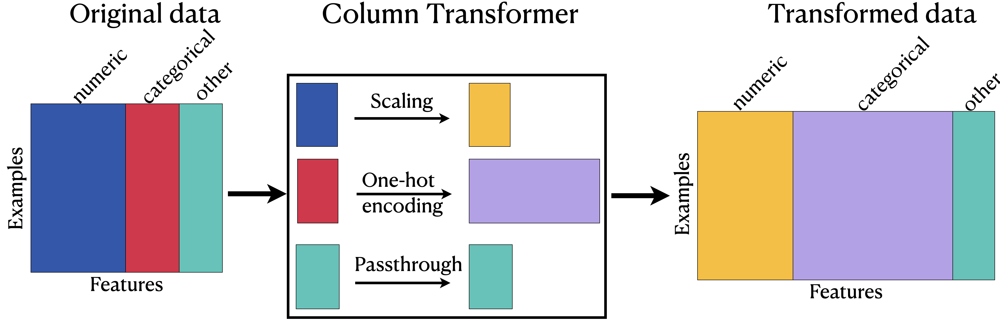

Lecture 6: sklearn ColumnTransformer and Text Features
Contents

Lecture 6: sklearn ColumnTransformer and Text Features#
UBC 2022-23
Instructor: Varada Kolhatkar
Imports, Announcements, and LO#
Imports#
import os
import sys
import matplotlib.pyplot as plt
import numpy as np
import pandas as pd
from IPython.display import HTML
sys.path.append("code/.")
from plotting_functions import *
from utils import *
pd.set_option("display.max_colwidth", 200)
from sklearn.compose import ColumnTransformer, make_column_transformer
from sklearn.dummy import DummyClassifier, DummyRegressor
from sklearn.impute import SimpleImputer
from sklearn.model_selection import cross_val_score, cross_validate, train_test_split
from sklearn.neighbors import KNeighborsClassifier
from sklearn.pipeline import Pipeline, make_pipeline
from sklearn.preprocessing import OneHotEncoder, OrdinalEncoder, StandardScaler
from sklearn.svm import SVC
from sklearn.tree import DecisionTreeClassifier
Announcements#
Homework 3 is due on Oct 3rd.
Friday is a holiday. So no tutorial this Friday.
Scheduled extra office hours this week.
Check the Calendar.
We’re working on Homework 2 grading. The grades will be released later this week.
Learning outcomes#
From this lecture, you will be able to
use
ColumnTransformerto build all our transformations together into one object and use it withsklearnpipelines;define
ColumnTransformerwhere transformers contain more than one steps;explain
handle_unknown="ignore"hyperparameter ofscikit-learn’sOneHotEncoder;explain
drop="if_binary"argument ofOneHotEncoder;identify when it’s appropriate to apply ordinal encoding vs one-hot encoding;
explain strategies to deal with categorical variables with too many categories;
explain why text data needs a different treatment than categorical variables;
use
scikit-learn’sCountVectorizerto encode text data;explain different hyperparameters of
CountVectorizer.incorporate text features in a machine learning pipeline
sklearn’s ColumnTransformer#
In most applications, some features are categorical, some are continuous, some are binary, and some are ordinal.
When we want to develop supervised machine learning pipelines on real-world datasets, very often we want to apply different transformation on different columns.
Enter
sklearn’sColumnTransformer!!
Let’s look at a toy example:
df = pd.read_csv("data/quiz2-grade-toy-col-transformer.csv")
df
| enjoy_course | ml_experience | major | class_attendance | university_years | lab1 | lab2 | lab3 | lab4 | quiz1 | quiz2 | |
|---|---|---|---|---|---|---|---|---|---|---|---|
| 0 | yes | 1 | Computer Science | Excellent | 3 | 92 | 93.0 | 84 | 91 | 92 | A+ |
| 1 | yes | 1 | Mechanical Engineering | Average | 2 | 94 | 90.0 | 80 | 83 | 91 | not A+ |
| 2 | yes | 0 | Mathematics | Poor | 3 | 78 | 85.0 | 83 | 80 | 80 | not A+ |
| 3 | no | 0 | Mathematics | Excellent | 3 | 91 | NaN | 92 | 91 | 89 | A+ |
| 4 | yes | 0 | Psychology | Good | 4 | 77 | 83.0 | 90 | 92 | 85 | A+ |
| 5 | no | 1 | Economics | Good | 5 | 70 | 73.0 | 68 | 74 | 71 | not A+ |
| 6 | yes | 1 | Computer Science | Excellent | 4 | 80 | 88.0 | 89 | 88 | 91 | A+ |
| 7 | no | 0 | Mechanical Engineering | Poor | 3 | 95 | 93.0 | 69 | 79 | 75 | not A+ |
| 8 | no | 0 | Linguistics | Average | 2 | 97 | 90.0 | 94 | 82 | 80 | not A+ |
| 9 | yes | 1 | Mathematics | Average | 4 | 95 | 82.0 | 94 | 94 | 85 | not A+ |
| 10 | yes | 0 | Psychology | Good | 3 | 98 | 86.0 | 95 | 95 | 78 | A+ |
| 11 | yes | 1 | Physics | Average | 1 | 95 | 88.0 | 93 | 92 | 85 | A+ |
| 12 | yes | 1 | Physics | Excellent | 2 | 98 | 96.0 | 96 | 99 | 100 | A+ |
| 13 | yes | 0 | Mechanical Engineering | Excellent | 4 | 95 | 94.0 | 96 | 95 | 100 | A+ |
| 14 | no | 0 | Mathematics | Poor | 3 | 95 | 90.0 | 93 | 95 | 70 | not A+ |
| 15 | no | 1 | Computer Science | Good | 3 | 92 | 85.0 | 67 | 94 | 92 | not A+ |
| 16 | yes | 0 | Computer Science | Average | 5 | 75 | 91.0 | 93 | 86 | 85 | A+ |
| 17 | yes | 1 | Economics | Average | 3 | 86 | 89.0 | 65 | 86 | 87 | not A+ |
| 18 | no | 1 | Biology | Good | 2 | 91 | NaN | 90 | 88 | 82 | not A+ |
| 19 | no | 0 | Psychology | Poor | 2 | 77 | 94.0 | 87 | 81 | 89 | not A+ |
| 20 | yes | 1 | Linguistics | Excellent | 4 | 96 | 92.0 | 92 | 96 | 87 | A+ |
df.info()
<class 'pandas.core.frame.DataFrame'>
RangeIndex: 21 entries, 0 to 20
Data columns (total 11 columns):
# Column Non-Null Count Dtype
--- ------ -------------- -----
0 enjoy_course 21 non-null object
1 ml_experience 21 non-null int64
2 major 21 non-null object
3 class_attendance 21 non-null object
4 university_years 21 non-null int64
5 lab1 21 non-null int64
6 lab2 19 non-null float64
7 lab3 21 non-null int64
8 lab4 21 non-null int64
9 quiz1 21 non-null int64
10 quiz2 21 non-null object
dtypes: float64(1), int64(6), object(4)
memory usage: 1.9+ KB
Transformations on the toy data#
df.head()
| enjoy_course | ml_experience | major | class_attendance | university_years | lab1 | lab2 | lab3 | lab4 | quiz1 | quiz2 | |
|---|---|---|---|---|---|---|---|---|---|---|---|
| 0 | yes | 1 | Computer Science | Excellent | 3 | 92 | 93.0 | 84 | 91 | 92 | A+ |
| 1 | yes | 1 | Mechanical Engineering | Average | 2 | 94 | 90.0 | 80 | 83 | 91 | not A+ |
| 2 | yes | 0 | Mathematics | Poor | 3 | 78 | 85.0 | 83 | 80 | 80 | not A+ |
| 3 | no | 0 | Mathematics | Excellent | 3 | 91 | NaN | 92 | 91 | 89 | A+ |
| 4 | yes | 0 | Psychology | Good | 4 | 77 | 83.0 | 90 | 92 | 85 | A+ |
Scaling on numeric features
One-hot encoding on the categorical feature
majorand binary featureenjoy_classOrdinal encoding on the ordinal feature
class_attendanceImputation on the
lab2featureNone on the
ml_experiencefeature
ColumnTransformer example#
Data#
X = df.drop(columns=["quiz2"])
y = df["quiz2"]
X.columns
Index(['enjoy_course', 'ml_experience', 'major', 'class_attendance',
'university_years', 'lab1', 'lab2', 'lab3', 'lab4', 'quiz1'],
dtype='object')
Identify the transformations we want to apply#
X.head()
| enjoy_course | ml_experience | major | class_attendance | university_years | lab1 | lab2 | lab3 | lab4 | quiz1 | |
|---|---|---|---|---|---|---|---|---|---|---|
| 0 | yes | 1 | Computer Science | Excellent | 3 | 92 | 93.0 | 84 | 91 | 92 |
| 1 | yes | 1 | Mechanical Engineering | Average | 2 | 94 | 90.0 | 80 | 83 | 91 |
| 2 | yes | 0 | Mathematics | Poor | 3 | 78 | 85.0 | 83 | 80 | 80 |
| 3 | no | 0 | Mathematics | Excellent | 3 | 91 | NaN | 92 | 91 | 89 |
| 4 | yes | 0 | Psychology | Good | 4 | 77 | 83.0 | 90 | 92 | 85 |
numeric_feats = ["university_years", "lab1", "lab3", "lab4", "quiz1"] # apply scaling
categorical_feats = ["major"] # apply one-hot encoding
passthrough_feats = ["ml_experience"] # do not apply any transformation
drop_feats = [
"lab2",
"class_attendance",
"enjoy_course",
] # do not include these features in modeling
For simplicity, let’s only focus on scaling and one-hot encoding first.
Create a column transformer#
Each transformation is specified by a name, a transformer object, and the columns this transformer should be applied to.
from sklearn.compose import ColumnTransformer
ct = ColumnTransformer(
[
("scaling", StandardScaler(), numeric_feats),
("onehot", OneHotEncoder(sparse=False), categorical_feats),
]
)
Convenient make_column_transformer syntax#
Similar to
make_pipelinesyntax, there is convenientmake_column_transformersyntax.The syntax automatically names each step based on its class.
We’ll be mostly using this syntax.
from sklearn.compose import make_column_transformer
ct = make_column_transformer(
(StandardScaler(), numeric_feats), # scaling on numeric features
("passthrough", passthrough_feats), # no transformations on the binary features
(OneHotEncoder(), categorical_feats), # OHE on categorical features
("drop", drop_feats), # drop the drop features
)
ct
ColumnTransformer(transformers=[('standardscaler', StandardScaler(),
['university_years', 'lab1', 'lab3', 'lab4',
'quiz1']),
('passthrough', 'passthrough',
['ml_experience']),
('onehotencoder', OneHotEncoder(), ['major']),
('drop', 'drop',
['lab2', 'class_attendance', 'enjoy_course'])])In a Jupyter environment, please rerun this cell to show the HTML representation or trust the notebook. On GitHub, the HTML representation is unable to render, please try loading this page with nbviewer.org.
ColumnTransformer(transformers=[('standardscaler', StandardScaler(),
['university_years', 'lab1', 'lab3', 'lab4',
'quiz1']),
('passthrough', 'passthrough',
['ml_experience']),
('onehotencoder', OneHotEncoder(), ['major']),
('drop', 'drop',
['lab2', 'class_attendance', 'enjoy_course'])])['university_years', 'lab1', 'lab3', 'lab4', 'quiz1']
StandardScaler()
['ml_experience']
passthrough
['major']
OneHotEncoder()
['lab2', 'class_attendance', 'enjoy_course']
drop
transformed = ct.fit_transform(X)
When we
fit_transform, each transformer is applied to the specified columns and the result of the transformations are concatenated horizontally.A big advantage here is that we build all our transformations together into one object, and that way we’re sure we do the same operations to all splits of the data.
Otherwise we might, for example, do the OHE on both train and test but forget to scale the test data.
Let’s examine the transformed data#
type(transformed[:2])
numpy.ndarray
transformed
array([[-0.09345386, 0.3589134 , -0.21733442, 0.36269995, 0.84002795,
1. , 0. , 1. , 0. , 0. ,
0. , 0. , 0. , 0. ],
[-1.07471942, 0.59082668, -0.61420598, -0.85597188, 0.71219761,
1. , 0. , 0. , 0. , 0. ,
0. , 1. , 0. , 0. ],
[-0.09345386, -1.26447953, -0.31655231, -1.31297381, -0.69393613,
0. , 0. , 0. , 0. , 0. ,
1. , 0. , 0. , 0. ],
[-0.09345386, 0.24295676, 0.57640869, 0.36269995, 0.45653693,
0. , 0. , 0. , 0. , 0. ,
1. , 0. , 0. , 0. ],
[ 0.8878117 , -1.38043616, 0.37797291, 0.51503393, -0.05478443,
0. , 0. , 0. , 0. , 0. ,
0. , 0. , 0. , 1. ],
[ 1.86907725, -2.19213263, -1.80482065, -2.22697768, -1.84440919,
1. , 0. , 0. , 1. , 0. ,
0. , 0. , 0. , 0. ],
[ 0.8878117 , -1.03256625, 0.27875502, -0.09430199, 0.71219761,
1. , 0. , 1. , 0. , 0. ,
0. , 0. , 0. , 0. ],
[-0.09345386, 0.70678332, -1.70560276, -1.46530779, -1.33308783,
0. , 0. , 0. , 0. , 0. ,
0. , 1. , 0. , 0. ],
[-1.07471942, 0.93869659, 0.77484447, -1.00830586, -0.69393613,
0. , 0. , 0. , 0. , 1. ,
0. , 0. , 0. , 0. ],
[ 0.8878117 , 0.70678332, 0.77484447, 0.81970188, -0.05478443,
1. , 0. , 0. , 0. , 0. ,
1. , 0. , 0. , 0. ],
[-0.09345386, 1.05465323, 0.87406235, 0.97203586, -0.94959681,
0. , 0. , 0. , 0. , 0. ,
0. , 0. , 0. , 1. ],
[-2.05598498, 0.70678332, 0.67562658, 0.51503393, -0.05478443,
1. , 0. , 0. , 0. , 0. ,
0. , 0. , 1. , 0. ],
[-1.07471942, 1.05465323, 0.97328024, 1.58137177, 1.86267067,
1. , 0. , 0. , 0. , 0. ,
0. , 0. , 1. , 0. ],
[ 0.8878117 , 0.70678332, 0.97328024, 0.97203586, 1.86267067,
0. , 0. , 0. , 0. , 0. ,
0. , 1. , 0. , 0. ],
[-0.09345386, 0.70678332, 0.67562658, 0.97203586, -1.97223953,
0. , 0. , 0. , 0. , 0. ,
1. , 0. , 0. , 0. ],
[-0.09345386, 0.3589134 , -1.90403853, 0.81970188, 0.84002795,
1. , 0. , 1. , 0. , 0. ,
0. , 0. , 0. , 0. ],
[ 1.86907725, -1.61234944, 0.67562658, -0.39896994, -0.05478443,
0. , 0. , 1. , 0. , 0. ,
0. , 0. , 0. , 0. ],
[-0.09345386, -0.33682642, -2.10247431, -0.39896994, 0.20087625,
1. , 0. , 0. , 1. , 0. ,
0. , 0. , 0. , 0. ],
[-1.07471942, 0.24295676, 0.37797291, -0.09430199, -0.43827545,
1. , 1. , 0. , 0. , 0. ,
0. , 0. , 0. , 0. ],
[-1.07471942, -1.38043616, 0.08031924, -1.16063983, 0.45653693,
0. , 0. , 0. , 0. , 0. ,
0. , 0. , 0. , 1. ],
[ 0.8878117 , 0.82273995, 0.57640869, 1.12436984, 0.20087625,
1. , 0. , 0. , 0. , 1. ,
0. , 0. , 0. , 0. ]])
Note
Note that the returned object is not a dataframe. So there are no column names.
Viewing the transformed data as a dataframe#
How can we view our transformed data as a dataframe?
We are adding more columns.
So the original columns won’t directly map to the transformed data.
Let’s create column names for the transformed data.
column_names = (
numeric_feats
+ passthrough_feats
+ ct.named_transformers_["onehotencoder"].get_feature_names_out().tolist()
)
column_names
['university_years',
'lab1',
'lab3',
'lab4',
'quiz1',
'ml_experience',
'major_Biology',
'major_Computer Science',
'major_Economics',
'major_Linguistics',
'major_Mathematics',
'major_Mechanical Engineering',
'major_Physics',
'major_Psychology']
ct.named_transformers_
{'standardscaler': StandardScaler(),
'passthrough': 'passthrough',
'onehotencoder': OneHotEncoder(),
'drop': 'drop'}
Note
Note that the order of the columns in the transformed data depends upon the order of the features we pass to the ColumnTransformer and can be different than the order of the features in the original dataframe.
pd.DataFrame(transformed, columns=column_names)
| university_years | lab1 | lab3 | lab4 | quiz1 | ml_experience | major_Biology | major_Computer Science | major_Economics | major_Linguistics | major_Mathematics | major_Mechanical Engineering | major_Physics | major_Psychology | |
|---|---|---|---|---|---|---|---|---|---|---|---|---|---|---|
| 0 | -0.093454 | 0.358913 | -0.217334 | 0.362700 | 0.840028 | 1.0 | 0.0 | 1.0 | 0.0 | 0.0 | 0.0 | 0.0 | 0.0 | 0.0 |
| 1 | -1.074719 | 0.590827 | -0.614206 | -0.855972 | 0.712198 | 1.0 | 0.0 | 0.0 | 0.0 | 0.0 | 0.0 | 1.0 | 0.0 | 0.0 |
| 2 | -0.093454 | -1.264480 | -0.316552 | -1.312974 | -0.693936 | 0.0 | 0.0 | 0.0 | 0.0 | 0.0 | 1.0 | 0.0 | 0.0 | 0.0 |
| 3 | -0.093454 | 0.242957 | 0.576409 | 0.362700 | 0.456537 | 0.0 | 0.0 | 0.0 | 0.0 | 0.0 | 1.0 | 0.0 | 0.0 | 0.0 |
| 4 | 0.887812 | -1.380436 | 0.377973 | 0.515034 | -0.054784 | 0.0 | 0.0 | 0.0 | 0.0 | 0.0 | 0.0 | 0.0 | 0.0 | 1.0 |
| 5 | 1.869077 | -2.192133 | -1.804821 | -2.226978 | -1.844409 | 1.0 | 0.0 | 0.0 | 1.0 | 0.0 | 0.0 | 0.0 | 0.0 | 0.0 |
| 6 | 0.887812 | -1.032566 | 0.278755 | -0.094302 | 0.712198 | 1.0 | 0.0 | 1.0 | 0.0 | 0.0 | 0.0 | 0.0 | 0.0 | 0.0 |
| 7 | -0.093454 | 0.706783 | -1.705603 | -1.465308 | -1.333088 | 0.0 | 0.0 | 0.0 | 0.0 | 0.0 | 0.0 | 1.0 | 0.0 | 0.0 |
| 8 | -1.074719 | 0.938697 | 0.774844 | -1.008306 | -0.693936 | 0.0 | 0.0 | 0.0 | 0.0 | 1.0 | 0.0 | 0.0 | 0.0 | 0.0 |
| 9 | 0.887812 | 0.706783 | 0.774844 | 0.819702 | -0.054784 | 1.0 | 0.0 | 0.0 | 0.0 | 0.0 | 1.0 | 0.0 | 0.0 | 0.0 |
| 10 | -0.093454 | 1.054653 | 0.874062 | 0.972036 | -0.949597 | 0.0 | 0.0 | 0.0 | 0.0 | 0.0 | 0.0 | 0.0 | 0.0 | 1.0 |
| 11 | -2.055985 | 0.706783 | 0.675627 | 0.515034 | -0.054784 | 1.0 | 0.0 | 0.0 | 0.0 | 0.0 | 0.0 | 0.0 | 1.0 | 0.0 |
| 12 | -1.074719 | 1.054653 | 0.973280 | 1.581372 | 1.862671 | 1.0 | 0.0 | 0.0 | 0.0 | 0.0 | 0.0 | 0.0 | 1.0 | 0.0 |
| 13 | 0.887812 | 0.706783 | 0.973280 | 0.972036 | 1.862671 | 0.0 | 0.0 | 0.0 | 0.0 | 0.0 | 0.0 | 1.0 | 0.0 | 0.0 |
| 14 | -0.093454 | 0.706783 | 0.675627 | 0.972036 | -1.972240 | 0.0 | 0.0 | 0.0 | 0.0 | 0.0 | 1.0 | 0.0 | 0.0 | 0.0 |
| 15 | -0.093454 | 0.358913 | -1.904039 | 0.819702 | 0.840028 | 1.0 | 0.0 | 1.0 | 0.0 | 0.0 | 0.0 | 0.0 | 0.0 | 0.0 |
| 16 | 1.869077 | -1.612349 | 0.675627 | -0.398970 | -0.054784 | 0.0 | 0.0 | 1.0 | 0.0 | 0.0 | 0.0 | 0.0 | 0.0 | 0.0 |
| 17 | -0.093454 | -0.336826 | -2.102474 | -0.398970 | 0.200876 | 1.0 | 0.0 | 0.0 | 1.0 | 0.0 | 0.0 | 0.0 | 0.0 | 0.0 |
| 18 | -1.074719 | 0.242957 | 0.377973 | -0.094302 | -0.438275 | 1.0 | 1.0 | 0.0 | 0.0 | 0.0 | 0.0 | 0.0 | 0.0 | 0.0 |
| 19 | -1.074719 | -1.380436 | 0.080319 | -1.160640 | 0.456537 | 0.0 | 0.0 | 0.0 | 0.0 | 0.0 | 0.0 | 0.0 | 0.0 | 1.0 |
| 20 | 0.887812 | 0.822740 | 0.576409 | 1.124370 | 0.200876 | 1.0 | 0.0 | 0.0 | 0.0 | 1.0 | 0.0 | 0.0 | 0.0 | 0.0 |
ColumnTransformer: Transformed data#

{kind=link}
Training models with transformed data#
We can now pass the
ColumnTransformerobject as a step in a pipeline.
pipe = make_pipeline(ct, SVC())
pipe.fit(X, y)
pipe.predict(X)
array(['A+', 'not A+', 'not A+', 'A+', 'A+', 'not A+', 'A+', 'not A+',
'not A+', 'A+', 'A+', 'A+', 'A+', 'A+', 'not A+', 'not A+', 'A+',
'not A+', 'not A+', 'not A+', 'A+'], dtype=object)
pipe
Pipeline(steps=[('columntransformer',
ColumnTransformer(transformers=[('standardscaler',
StandardScaler(),
['university_years', 'lab1',
'lab3', 'lab4', 'quiz1']),
('passthrough', 'passthrough',
['ml_experience']),
('onehotencoder',
OneHotEncoder(), ['major']),
('drop', 'drop',
['lab2', 'class_attendance',
'enjoy_course'])])),
('svc', SVC())])In a Jupyter environment, please rerun this cell to show the HTML representation or trust the notebook. On GitHub, the HTML representation is unable to render, please try loading this page with nbviewer.org.
Pipeline(steps=[('columntransformer',
ColumnTransformer(transformers=[('standardscaler',
StandardScaler(),
['university_years', 'lab1',
'lab3', 'lab4', 'quiz1']),
('passthrough', 'passthrough',
['ml_experience']),
('onehotencoder',
OneHotEncoder(), ['major']),
('drop', 'drop',
['lab2', 'class_attendance',
'enjoy_course'])])),
('svc', SVC())])ColumnTransformer(transformers=[('standardscaler', StandardScaler(),
['university_years', 'lab1', 'lab3', 'lab4',
'quiz1']),
('passthrough', 'passthrough',
['ml_experience']),
('onehotencoder', OneHotEncoder(), ['major']),
('drop', 'drop',
['lab2', 'class_attendance', 'enjoy_course'])])['university_years', 'lab1', 'lab3', 'lab4', 'quiz1']
StandardScaler()
['ml_experience']
passthrough
['major']
OneHotEncoder()
['lab2', 'class_attendance', 'enjoy_course']
drop
SVC()
❓❓ Questions for you#
(iClicker) Exercise 6.1#
iClicker cloud join link: https://join.iclicker.com/3DP5H
Select all of the following statements which are TRUE.
You could carry out cross-validation by passing a
ColumnTransformerobject tocross_validate.After applying column transformer, the order of the columns in the transformed data has to be the same as the order of the columns in the original data.
After applying a column transformer, the transformed data is always going to be of different shape than the original data.
When you call
fit_transformon aColumnTransformerobject, you get a numpy ndarray.
More on feature transformations#
sklearn set_config#
With multiple transformations in a column transformer, it can get tricky to keep track of everything happening inside it.
We can use
set_configto display a diagram of this.
from sklearn import set_config
set_config(display="diagram")
ct
ColumnTransformer(transformers=[('standardscaler', StandardScaler(),
['university_years', 'lab1', 'lab3', 'lab4',
'quiz1']),
('passthrough', 'passthrough',
['ml_experience']),
('onehotencoder', OneHotEncoder(), ['major']),
('drop', 'drop',
['lab2', 'class_attendance', 'enjoy_course'])])In a Jupyter environment, please rerun this cell to show the HTML representation or trust the notebook. On GitHub, the HTML representation is unable to render, please try loading this page with nbviewer.org.
ColumnTransformer(transformers=[('standardscaler', StandardScaler(),
['university_years', 'lab1', 'lab3', 'lab4',
'quiz1']),
('passthrough', 'passthrough',
['ml_experience']),
('onehotencoder', OneHotEncoder(), ['major']),
('drop', 'drop',
['lab2', 'class_attendance', 'enjoy_course'])])['university_years', 'lab1', 'lab3', 'lab4', 'quiz1']
StandardScaler()
['ml_experience']
passthrough
['major']
OneHotEncoder()
['lab2', 'class_attendance', 'enjoy_course']
drop
print(ct)
ColumnTransformer(transformers=[('standardscaler', StandardScaler(),
['university_years', 'lab1', 'lab3', 'lab4',
'quiz1']),
('passthrough', 'passthrough',
['ml_experience']),
('onehotencoder', OneHotEncoder(), ['major']),
('drop', 'drop',
['lab2', 'class_attendance', 'enjoy_course'])])
Multiple transformations in a transformer#
Recall that
lab2has missing values.
X.head(10)
| enjoy_course | ml_experience | major | class_attendance | university_years | lab1 | lab2 | lab3 | lab4 | quiz1 | |
|---|---|---|---|---|---|---|---|---|---|---|
| 0 | yes | 1 | Computer Science | Excellent | 3 | 92 | 93.0 | 84 | 91 | 92 |
| 1 | yes | 1 | Mechanical Engineering | Average | 2 | 94 | 90.0 | 80 | 83 | 91 |
| 2 | yes | 0 | Mathematics | Poor | 3 | 78 | 85.0 | 83 | 80 | 80 |
| 3 | no | 0 | Mathematics | Excellent | 3 | 91 | NaN | 92 | 91 | 89 |
| 4 | yes | 0 | Psychology | Good | 4 | 77 | 83.0 | 90 | 92 | 85 |
| 5 | no | 1 | Economics | Good | 5 | 70 | 73.0 | 68 | 74 | 71 |
| 6 | yes | 1 | Computer Science | Excellent | 4 | 80 | 88.0 | 89 | 88 | 91 |
| 7 | no | 0 | Mechanical Engineering | Poor | 3 | 95 | 93.0 | 69 | 79 | 75 |
| 8 | no | 0 | Linguistics | Average | 2 | 97 | 90.0 | 94 | 82 | 80 |
| 9 | yes | 1 | Mathematics | Average | 4 | 95 | 82.0 | 94 | 94 | 85 |
So we would like to apply more than one transformations on it: imputation and scaling.
We can treat
lab2separately, but we can also include it intonumeric_featsand apply both transformations on all numeric columns.
numeric_feats = [
"university_years",
"lab1",
"lab2",
"lab3",
"lab4",
"quiz1",
] # apply scaling
categorical_feats = ["major"] # apply one-hot encoding
passthrough_feats = ["ml_experience"] # do not apply any transformation
drop_feats = ["class_attendance", "enjoy_course"]
To apply more than one transformations we can define a pipeline inside a column transformer to chain different transformations.
ct = make_column_transformer(
(
make_pipeline(SimpleImputer(), StandardScaler()),
numeric_feats,
), # scaling on numeric features
("passthrough", passthrough_feats), # no transformations on the binary features
(OneHotEncoder(), categorical_feats), # OHE on categorical features
("drop", drop_feats), # drop the drop features
)
ct
ColumnTransformer(transformers=[('pipeline',
Pipeline(steps=[('simpleimputer',
SimpleImputer()),
('standardscaler',
StandardScaler())]),
['university_years', 'lab1', 'lab2', 'lab3',
'lab4', 'quiz1']),
('passthrough', 'passthrough',
['ml_experience']),
('onehotencoder', OneHotEncoder(), ['major']),
('drop', 'drop',
['class_attendance', 'enjoy_course'])])In a Jupyter environment, please rerun this cell to show the HTML representation or trust the notebook. On GitHub, the HTML representation is unable to render, please try loading this page with nbviewer.org.
ColumnTransformer(transformers=[('pipeline',
Pipeline(steps=[('simpleimputer',
SimpleImputer()),
('standardscaler',
StandardScaler())]),
['university_years', 'lab1', 'lab2', 'lab3',
'lab4', 'quiz1']),
('passthrough', 'passthrough',
['ml_experience']),
('onehotencoder', OneHotEncoder(), ['major']),
('drop', 'drop',
['class_attendance', 'enjoy_course'])])['university_years', 'lab1', 'lab2', 'lab3', 'lab4', 'quiz1']
SimpleImputer()
StandardScaler()
['ml_experience']
passthrough
['major']
OneHotEncoder()
['class_attendance', 'enjoy_course']
drop
X_transformed = ct.fit_transform(X)
column_names = (
numeric_feats
+ passthrough_feats
+ ct.named_transformers_["onehotencoder"].get_feature_names_out().tolist()
)
column_names
['university_years',
'lab1',
'lab2',
'lab3',
'lab4',
'quiz1',
'ml_experience',
'major_Biology',
'major_Computer Science',
'major_Economics',
'major_Linguistics',
'major_Mathematics',
'major_Mechanical Engineering',
'major_Physics',
'major_Psychology']
pd.DataFrame(X_transformed, columns=column_names)
| university_years | lab1 | lab2 | lab3 | lab4 | quiz1 | ml_experience | major_Biology | major_Computer Science | major_Economics | major_Linguistics | major_Mathematics | major_Mechanical Engineering | major_Physics | major_Psychology | |
|---|---|---|---|---|---|---|---|---|---|---|---|---|---|---|---|
| 0 | -0.093454 | 0.358913 | 0.893260 | -0.217334 | 0.362700 | 0.840028 | 1.0 | 0.0 | 1.0 | 0.0 | 0.0 | 0.0 | 0.0 | 0.0 | 0.0 |
| 1 | -1.074719 | 0.590827 | 0.294251 | -0.614206 | -0.855972 | 0.712198 | 1.0 | 0.0 | 0.0 | 0.0 | 0.0 | 0.0 | 1.0 | 0.0 | 0.0 |
| 2 | -0.093454 | -1.264480 | -0.704099 | -0.316552 | -1.312974 | -0.693936 | 0.0 | 0.0 | 0.0 | 0.0 | 0.0 | 1.0 | 0.0 | 0.0 | 0.0 |
| 3 | -0.093454 | 0.242957 | 0.000000 | 0.576409 | 0.362700 | 0.456537 | 0.0 | 0.0 | 0.0 | 0.0 | 0.0 | 1.0 | 0.0 | 0.0 | 0.0 |
| 4 | 0.887812 | -1.380436 | -1.103439 | 0.377973 | 0.515034 | -0.054784 | 0.0 | 0.0 | 0.0 | 0.0 | 0.0 | 0.0 | 0.0 | 0.0 | 1.0 |
| 5 | 1.869077 | -2.192133 | -3.100139 | -1.804821 | -2.226978 | -1.844409 | 1.0 | 0.0 | 0.0 | 1.0 | 0.0 | 0.0 | 0.0 | 0.0 | 0.0 |
| 6 | 0.887812 | -1.032566 | -0.105089 | 0.278755 | -0.094302 | 0.712198 | 1.0 | 0.0 | 1.0 | 0.0 | 0.0 | 0.0 | 0.0 | 0.0 | 0.0 |
| 7 | -0.093454 | 0.706783 | 0.893260 | -1.705603 | -1.465308 | -1.333088 | 0.0 | 0.0 | 0.0 | 0.0 | 0.0 | 0.0 | 1.0 | 0.0 | 0.0 |
| 8 | -1.074719 | 0.938697 | 0.294251 | 0.774844 | -1.008306 | -0.693936 | 0.0 | 0.0 | 0.0 | 0.0 | 1.0 | 0.0 | 0.0 | 0.0 | 0.0 |
| 9 | 0.887812 | 0.706783 | -1.303109 | 0.774844 | 0.819702 | -0.054784 | 1.0 | 0.0 | 0.0 | 0.0 | 0.0 | 1.0 | 0.0 | 0.0 | 0.0 |
| 10 | -0.093454 | 1.054653 | -0.504429 | 0.874062 | 0.972036 | -0.949597 | 0.0 | 0.0 | 0.0 | 0.0 | 0.0 | 0.0 | 0.0 | 0.0 | 1.0 |
| 11 | -2.055985 | 0.706783 | -0.105089 | 0.675627 | 0.515034 | -0.054784 | 1.0 | 0.0 | 0.0 | 0.0 | 0.0 | 0.0 | 0.0 | 1.0 | 0.0 |
| 12 | -1.074719 | 1.054653 | 1.492270 | 0.973280 | 1.581372 | 1.862671 | 1.0 | 0.0 | 0.0 | 0.0 | 0.0 | 0.0 | 0.0 | 1.0 | 0.0 |
| 13 | 0.887812 | 0.706783 | 1.092930 | 0.973280 | 0.972036 | 1.862671 | 0.0 | 0.0 | 0.0 | 0.0 | 0.0 | 0.0 | 1.0 | 0.0 | 0.0 |
| 14 | -0.093454 | 0.706783 | 0.294251 | 0.675627 | 0.972036 | -1.972240 | 0.0 | 0.0 | 0.0 | 0.0 | 0.0 | 1.0 | 0.0 | 0.0 | 0.0 |
| 15 | -0.093454 | 0.358913 | -0.704099 | -1.904039 | 0.819702 | 0.840028 | 1.0 | 0.0 | 1.0 | 0.0 | 0.0 | 0.0 | 0.0 | 0.0 | 0.0 |
| 16 | 1.869077 | -1.612349 | 0.493921 | 0.675627 | -0.398970 | -0.054784 | 0.0 | 0.0 | 1.0 | 0.0 | 0.0 | 0.0 | 0.0 | 0.0 | 0.0 |
| 17 | -0.093454 | -0.336826 | 0.094581 | -2.102474 | -0.398970 | 0.200876 | 1.0 | 0.0 | 0.0 | 1.0 | 0.0 | 0.0 | 0.0 | 0.0 | 0.0 |
| 18 | -1.074719 | 0.242957 | 0.000000 | 0.377973 | -0.094302 | -0.438275 | 1.0 | 1.0 | 0.0 | 0.0 | 0.0 | 0.0 | 0.0 | 0.0 | 0.0 |
| 19 | -1.074719 | -1.380436 | 1.092930 | 0.080319 | -1.160640 | 0.456537 | 0.0 | 0.0 | 0.0 | 0.0 | 0.0 | 0.0 | 0.0 | 0.0 | 1.0 |
| 20 | 0.887812 | 0.822740 | 0.693590 | 0.576409 | 1.124370 | 0.200876 | 1.0 | 0.0 | 0.0 | 0.0 | 1.0 | 0.0 | 0.0 | 0.0 | 0.0 |
Incorporating ordinal feature class_attendance#
The
class_attendancecolumn is different than themajorcolumn in that there is some ordering of the values.Excellent > Good > Average > poor
X.head()
| enjoy_course | ml_experience | major | class_attendance | university_years | lab1 | lab2 | lab3 | lab4 | quiz1 | |
|---|---|---|---|---|---|---|---|---|---|---|
| 0 | yes | 1 | Computer Science | Excellent | 3 | 92 | 93.0 | 84 | 91 | 92 |
| 1 | yes | 1 | Mechanical Engineering | Average | 2 | 94 | 90.0 | 80 | 83 | 91 |
| 2 | yes | 0 | Mathematics | Poor | 3 | 78 | 85.0 | 83 | 80 | 80 |
| 3 | no | 0 | Mathematics | Excellent | 3 | 91 | NaN | 92 | 91 | 89 |
| 4 | yes | 0 | Psychology | Good | 4 | 77 | 83.0 | 90 | 92 | 85 |
Let’s try applying OrdinalEncoder on this column.
X_toy = X[["class_attendance"]]
enc = OrdinalEncoder()
enc.fit(X_toy)
X_toy_ord = enc.transform(X_toy)
df = pd.DataFrame(
data=X_toy_ord,
columns=["class_attendance_enc"],
index=X_toy.index,
)
pd.concat([X_toy, df], axis=1).head(10)
| class_attendance | class_attendance_enc | |
|---|---|---|
| 0 | Excellent | 1.0 |
| 1 | Average | 0.0 |
| 2 | Poor | 3.0 |
| 3 | Excellent | 1.0 |
| 4 | Good | 2.0 |
| 5 | Good | 2.0 |
| 6 | Excellent | 1.0 |
| 7 | Poor | 3.0 |
| 8 | Average | 0.0 |
| 9 | Average | 0.0 |
What’s the problem here?
The encoder doesn’t know the order.
We can examine unique categories manually, order them based on our intuitions, and then provide this human knowledge to the transformer.
What are the unique categories of class_attendance?
X_toy["class_attendance"].unique()
array(['Excellent', 'Average', 'Poor', 'Good'], dtype=object)
Let’s order them manually.
class_attendance_levels = ["Poor", "Average", "Good", "Excellent"]
Note
Note that if you use the reverse order of the categories, it wouldn’t matter.
Let’s make sure that we have included all categories in our manual ordering.
assert set(class_attendance_levels) == set(X_toy["class_attendance"].unique())
oe = OrdinalEncoder(categories=[class_attendance_levels], dtype=int)
oe.fit(X_toy[["class_attendance"]])
ca_transformed = oe.transform(X_toy[["class_attendance"]])
df = pd.DataFrame(
data=ca_transformed, columns=["class_attendance_enc"], index=X_toy.index
)
print(oe.categories_)
pd.concat([X_toy, df], axis=1).head(10)
[array(['Poor', 'Average', 'Good', 'Excellent'], dtype=object)]
| class_attendance | class_attendance_enc | |
|---|---|---|
| 0 | Excellent | 3 |
| 1 | Average | 1 |
| 2 | Poor | 0 |
| 3 | Excellent | 3 |
| 4 | Good | 2 |
| 5 | Good | 2 |
| 6 | Excellent | 3 |
| 7 | Poor | 0 |
| 8 | Average | 1 |
| 9 | Average | 1 |
The encoded categories are looking better now!
More than one ordinal columns?#
We can pass the manually ordered categories when we create an
OrdinalEncoderobject as a list of lists.If you have more than one ordinal columns
manually create a list of ordered categories for each column
pass a list of lists to
OrdinalEncoder, where each inner list corresponds to manually created list of ordered categories for a corresponding ordinal column.
Now let’s incorporate ordinal encoding of class_attendance in our column transformer.
X
| enjoy_course | ml_experience | major | class_attendance | university_years | lab1 | lab2 | lab3 | lab4 | quiz1 | |
|---|---|---|---|---|---|---|---|---|---|---|
| 0 | yes | 1 | Computer Science | Excellent | 3 | 92 | 93.0 | 84 | 91 | 92 |
| 1 | yes | 1 | Mechanical Engineering | Average | 2 | 94 | 90.0 | 80 | 83 | 91 |
| 2 | yes | 0 | Mathematics | Poor | 3 | 78 | 85.0 | 83 | 80 | 80 |
| 3 | no | 0 | Mathematics | Excellent | 3 | 91 | NaN | 92 | 91 | 89 |
| 4 | yes | 0 | Psychology | Good | 4 | 77 | 83.0 | 90 | 92 | 85 |
| 5 | no | 1 | Economics | Good | 5 | 70 | 73.0 | 68 | 74 | 71 |
| 6 | yes | 1 | Computer Science | Excellent | 4 | 80 | 88.0 | 89 | 88 | 91 |
| 7 | no | 0 | Mechanical Engineering | Poor | 3 | 95 | 93.0 | 69 | 79 | 75 |
| 8 | no | 0 | Linguistics | Average | 2 | 97 | 90.0 | 94 | 82 | 80 |
| 9 | yes | 1 | Mathematics | Average | 4 | 95 | 82.0 | 94 | 94 | 85 |
| 10 | yes | 0 | Psychology | Good | 3 | 98 | 86.0 | 95 | 95 | 78 |
| 11 | yes | 1 | Physics | Average | 1 | 95 | 88.0 | 93 | 92 | 85 |
| 12 | yes | 1 | Physics | Excellent | 2 | 98 | 96.0 | 96 | 99 | 100 |
| 13 | yes | 0 | Mechanical Engineering | Excellent | 4 | 95 | 94.0 | 96 | 95 | 100 |
| 14 | no | 0 | Mathematics | Poor | 3 | 95 | 90.0 | 93 | 95 | 70 |
| 15 | no | 1 | Computer Science | Good | 3 | 92 | 85.0 | 67 | 94 | 92 |
| 16 | yes | 0 | Computer Science | Average | 5 | 75 | 91.0 | 93 | 86 | 85 |
| 17 | yes | 1 | Economics | Average | 3 | 86 | 89.0 | 65 | 86 | 87 |
| 18 | no | 1 | Biology | Good | 2 | 91 | NaN | 90 | 88 | 82 |
| 19 | no | 0 | Psychology | Poor | 2 | 77 | 94.0 | 87 | 81 | 89 |
| 20 | yes | 1 | Linguistics | Excellent | 4 | 96 | 92.0 | 92 | 96 | 87 |
numeric_feats = [
"university_years",
"lab1",
"lab2",
"lab3",
"lab4",
"quiz1",
] # apply scaling
categorical_feats = ["major"] # apply one-hot encoding
ordinal_feats = ["class_attendance"] # apply ordinal encoding
passthrough_feats = ["ml_experience"] # do not apply any transformation
drop_feats = ["enjoy_course"] # do not include these features
ct = make_column_transformer(
(
make_pipeline(SimpleImputer(), StandardScaler()),
numeric_feats,
), # scaling on numeric features
(
OrdinalEncoder(categories=[class_attendance_levels], dtype=int),
ordinal_feats,
), # Ordinal encoding on ordinal features
("passthrough", passthrough_feats), # no transformations on the binary features
(OneHotEncoder(), categorical_feats), # OHE on categorical features
("drop", drop_feats), # drop the drop features
)
ct
ColumnTransformer(transformers=[('pipeline',
Pipeline(steps=[('simpleimputer',
SimpleImputer()),
('standardscaler',
StandardScaler())]),
['university_years', 'lab1', 'lab2', 'lab3',
'lab4', 'quiz1']),
('ordinalencoder',
OrdinalEncoder(categories=[['Poor', 'Average',
'Good',
'Excellent']],
dtype=<class 'int'>),
['class_attendance']),
('passthrough', 'passthrough',
['ml_experience']),
('onehotencoder', OneHotEncoder(), ['major']),
('drop', 'drop', ['enjoy_course'])])In a Jupyter environment, please rerun this cell to show the HTML representation or trust the notebook. On GitHub, the HTML representation is unable to render, please try loading this page with nbviewer.org.
ColumnTransformer(transformers=[('pipeline',
Pipeline(steps=[('simpleimputer',
SimpleImputer()),
('standardscaler',
StandardScaler())]),
['university_years', 'lab1', 'lab2', 'lab3',
'lab4', 'quiz1']),
('ordinalencoder',
OrdinalEncoder(categories=[['Poor', 'Average',
'Good',
'Excellent']],
dtype=<class 'int'>),
['class_attendance']),
('passthrough', 'passthrough',
['ml_experience']),
('onehotencoder', OneHotEncoder(), ['major']),
('drop', 'drop', ['enjoy_course'])])['university_years', 'lab1', 'lab2', 'lab3', 'lab4', 'quiz1']
SimpleImputer()
StandardScaler()
['class_attendance']
OrdinalEncoder(categories=[['Poor', 'Average', 'Good', 'Excellent']],
dtype=<class 'int'>)['ml_experience']
passthrough
['major']
OneHotEncoder()
['enjoy_course']
drop
X_transformed = ct.fit_transform(X)
column_names = (
numeric_feats
+ ordinal_feats
+ passthrough_feats
+ ct.named_transformers_["onehotencoder"].get_feature_names_out().tolist()
)
column_names
['university_years',
'lab1',
'lab2',
'lab3',
'lab4',
'quiz1',
'class_attendance',
'ml_experience',
'major_Biology',
'major_Computer Science',
'major_Economics',
'major_Linguistics',
'major_Mathematics',
'major_Mechanical Engineering',
'major_Physics',
'major_Psychology']
pd.DataFrame(X_transformed, columns=column_names)
| university_years | lab1 | lab2 | lab3 | lab4 | quiz1 | class_attendance | ml_experience | major_Biology | major_Computer Science | major_Economics | major_Linguistics | major_Mathematics | major_Mechanical Engineering | major_Physics | major_Psychology | |
|---|---|---|---|---|---|---|---|---|---|---|---|---|---|---|---|---|
| 0 | -0.093454 | 0.358913 | 0.893260 | -0.217334 | 0.362700 | 0.840028 | 3.0 | 1.0 | 0.0 | 1.0 | 0.0 | 0.0 | 0.0 | 0.0 | 0.0 | 0.0 |
| 1 | -1.074719 | 0.590827 | 0.294251 | -0.614206 | -0.855972 | 0.712198 | 1.0 | 1.0 | 0.0 | 0.0 | 0.0 | 0.0 | 0.0 | 1.0 | 0.0 | 0.0 |
| 2 | -0.093454 | -1.264480 | -0.704099 | -0.316552 | -1.312974 | -0.693936 | 0.0 | 0.0 | 0.0 | 0.0 | 0.0 | 0.0 | 1.0 | 0.0 | 0.0 | 0.0 |
| 3 | -0.093454 | 0.242957 | 0.000000 | 0.576409 | 0.362700 | 0.456537 | 3.0 | 0.0 | 0.0 | 0.0 | 0.0 | 0.0 | 1.0 | 0.0 | 0.0 | 0.0 |
| 4 | 0.887812 | -1.380436 | -1.103439 | 0.377973 | 0.515034 | -0.054784 | 2.0 | 0.0 | 0.0 | 0.0 | 0.0 | 0.0 | 0.0 | 0.0 | 0.0 | 1.0 |
| 5 | 1.869077 | -2.192133 | -3.100139 | -1.804821 | -2.226978 | -1.844409 | 2.0 | 1.0 | 0.0 | 0.0 | 1.0 | 0.0 | 0.0 | 0.0 | 0.0 | 0.0 |
| 6 | 0.887812 | -1.032566 | -0.105089 | 0.278755 | -0.094302 | 0.712198 | 3.0 | 1.0 | 0.0 | 1.0 | 0.0 | 0.0 | 0.0 | 0.0 | 0.0 | 0.0 |
| 7 | -0.093454 | 0.706783 | 0.893260 | -1.705603 | -1.465308 | -1.333088 | 0.0 | 0.0 | 0.0 | 0.0 | 0.0 | 0.0 | 0.0 | 1.0 | 0.0 | 0.0 |
| 8 | -1.074719 | 0.938697 | 0.294251 | 0.774844 | -1.008306 | -0.693936 | 1.0 | 0.0 | 0.0 | 0.0 | 0.0 | 1.0 | 0.0 | 0.0 | 0.0 | 0.0 |
| 9 | 0.887812 | 0.706783 | -1.303109 | 0.774844 | 0.819702 | -0.054784 | 1.0 | 1.0 | 0.0 | 0.0 | 0.0 | 0.0 | 1.0 | 0.0 | 0.0 | 0.0 |
| 10 | -0.093454 | 1.054653 | -0.504429 | 0.874062 | 0.972036 | -0.949597 | 2.0 | 0.0 | 0.0 | 0.0 | 0.0 | 0.0 | 0.0 | 0.0 | 0.0 | 1.0 |
| 11 | -2.055985 | 0.706783 | -0.105089 | 0.675627 | 0.515034 | -0.054784 | 1.0 | 1.0 | 0.0 | 0.0 | 0.0 | 0.0 | 0.0 | 0.0 | 1.0 | 0.0 |
| 12 | -1.074719 | 1.054653 | 1.492270 | 0.973280 | 1.581372 | 1.862671 | 3.0 | 1.0 | 0.0 | 0.0 | 0.0 | 0.0 | 0.0 | 0.0 | 1.0 | 0.0 |
| 13 | 0.887812 | 0.706783 | 1.092930 | 0.973280 | 0.972036 | 1.862671 | 3.0 | 0.0 | 0.0 | 0.0 | 0.0 | 0.0 | 0.0 | 1.0 | 0.0 | 0.0 |
| 14 | -0.093454 | 0.706783 | 0.294251 | 0.675627 | 0.972036 | -1.972240 | 0.0 | 0.0 | 0.0 | 0.0 | 0.0 | 0.0 | 1.0 | 0.0 | 0.0 | 0.0 |
| 15 | -0.093454 | 0.358913 | -0.704099 | -1.904039 | 0.819702 | 0.840028 | 2.0 | 1.0 | 0.0 | 1.0 | 0.0 | 0.0 | 0.0 | 0.0 | 0.0 | 0.0 |
| 16 | 1.869077 | -1.612349 | 0.493921 | 0.675627 | -0.398970 | -0.054784 | 1.0 | 0.0 | 0.0 | 1.0 | 0.0 | 0.0 | 0.0 | 0.0 | 0.0 | 0.0 |
| 17 | -0.093454 | -0.336826 | 0.094581 | -2.102474 | -0.398970 | 0.200876 | 1.0 | 1.0 | 0.0 | 0.0 | 1.0 | 0.0 | 0.0 | 0.0 | 0.0 | 0.0 |
| 18 | -1.074719 | 0.242957 | 0.000000 | 0.377973 | -0.094302 | -0.438275 | 2.0 | 1.0 | 1.0 | 0.0 | 0.0 | 0.0 | 0.0 | 0.0 | 0.0 | 0.0 |
| 19 | -1.074719 | -1.380436 | 1.092930 | 0.080319 | -1.160640 | 0.456537 | 0.0 | 0.0 | 0.0 | 0.0 | 0.0 | 0.0 | 0.0 | 0.0 | 0.0 | 1.0 |
| 20 | 0.887812 | 0.822740 | 0.693590 | 0.576409 | 1.124370 | 0.200876 | 3.0 | 1.0 | 0.0 | 0.0 | 0.0 | 1.0 | 0.0 | 0.0 | 0.0 | 0.0 |
Dealing with unknown categories#
Let’s create a pipeline with the column transformer and pass it to cross_validate.
pipe = make_pipeline(ct, SVC())
scores = cross_validate(pipe, X, y, return_train_score=True)
pd.DataFrame(scores)
/Users/kvarada/opt/miniconda3/envs/cpsc330/lib/python3.10/site-packages/sklearn/model_selection/_validation.py:776: UserWarning: Scoring failed. The score on this train-test partition for these parameters will be set to nan. Details:
Traceback (most recent call last):
File "/Users/kvarada/opt/miniconda3/envs/cpsc330/lib/python3.10/site-packages/sklearn/model_selection/_validation.py", line 767, in _score
scores = scorer(estimator, X_test, y_test)
File "/Users/kvarada/opt/miniconda3/envs/cpsc330/lib/python3.10/site-packages/sklearn/metrics/_scorer.py", line 429, in _passthrough_scorer
return estimator.score(*args, **kwargs)
File "/Users/kvarada/opt/miniconda3/envs/cpsc330/lib/python3.10/site-packages/sklearn/pipeline.py", line 695, in score
Xt = transform.transform(Xt)
File "/Users/kvarada/opt/miniconda3/envs/cpsc330/lib/python3.10/site-packages/sklearn/compose/_column_transformer.py", line 763, in transform
Xs = self._fit_transform(
File "/Users/kvarada/opt/miniconda3/envs/cpsc330/lib/python3.10/site-packages/sklearn/compose/_column_transformer.py", line 621, in _fit_transform
return Parallel(n_jobs=self.n_jobs)(
File "/Users/kvarada/opt/miniconda3/envs/cpsc330/lib/python3.10/site-packages/joblib/parallel.py", line 1046, in __call__
while self.dispatch_one_batch(iterator):
File "/Users/kvarada/opt/miniconda3/envs/cpsc330/lib/python3.10/site-packages/joblib/parallel.py", line 861, in dispatch_one_batch
self._dispatch(tasks)
File "/Users/kvarada/opt/miniconda3/envs/cpsc330/lib/python3.10/site-packages/joblib/parallel.py", line 779, in _dispatch
job = self._backend.apply_async(batch, callback=cb)
File "/Users/kvarada/opt/miniconda3/envs/cpsc330/lib/python3.10/site-packages/joblib/_parallel_backends.py", line 208, in apply_async
result = ImmediateResult(func)
File "/Users/kvarada/opt/miniconda3/envs/cpsc330/lib/python3.10/site-packages/joblib/_parallel_backends.py", line 572, in __init__
self.results = batch()
File "/Users/kvarada/opt/miniconda3/envs/cpsc330/lib/python3.10/site-packages/joblib/parallel.py", line 262, in __call__
return [func(*args, **kwargs)
File "/Users/kvarada/opt/miniconda3/envs/cpsc330/lib/python3.10/site-packages/joblib/parallel.py", line 262, in <listcomp>
return [func(*args, **kwargs)
File "/Users/kvarada/opt/miniconda3/envs/cpsc330/lib/python3.10/site-packages/sklearn/utils/fixes.py", line 117, in __call__
return self.function(*args, **kwargs)
File "/Users/kvarada/opt/miniconda3/envs/cpsc330/lib/python3.10/site-packages/sklearn/pipeline.py", line 853, in _transform_one
res = transformer.transform(X)
File "/Users/kvarada/opt/miniconda3/envs/cpsc330/lib/python3.10/site-packages/sklearn/preprocessing/_encoders.py", line 882, in transform
X_int, X_mask = self._transform(
File "/Users/kvarada/opt/miniconda3/envs/cpsc330/lib/python3.10/site-packages/sklearn/preprocessing/_encoders.py", line 160, in _transform
raise ValueError(msg)
ValueError: Found unknown categories ['Biology'] in column 0 during transform
warnings.warn(
| fit_time | score_time | test_score | train_score | |
|---|---|---|---|---|
| 0 | 0.003108 | 0.001540 | 1.00 | 0.937500 |
| 1 | 0.002711 | 0.001479 | 1.00 | 0.941176 |
| 2 | 0.002557 | 0.001444 | 0.50 | 1.000000 |
| 3 | 0.002651 | 0.001556 | 0.75 | 0.941176 |
| 4 | 0.002645 | 0.006495 | NaN | 1.000000 |
What’s going on here??
Let’s look at the error message:
ValueError: Found unknown categories ['Biology'] in column 0 during transform
X["major"].value_counts()
Computer Science 4
Mathematics 4
Mechanical Engineering 3
Psychology 3
Economics 2
Linguistics 2
Physics 2
Biology 1
Name: major, dtype: int64
There is only one instance of Biology.
During cross-validation, this is getting put into the validation split.
By default,
OneHotEncoderthrows an error because you might want to know about this.
Simplest fix:
Pass
handle_unknown="ignore"argument toOneHotEncoderIt creates a row with all zeros.
ct = make_column_transformer(
(
make_pipeline(SimpleImputer(), StandardScaler()),
numeric_feats,
), # scaling on numeric features
(
OrdinalEncoder(categories=[class_attendance_levels], dtype=int),
ordinal_feats,
), # Ordinal encoding on ordinal features
("passthrough", passthrough_feats), # no transformations on the binary features
(
OneHotEncoder(handle_unknown="ignore"),
categorical_feats,
), # OHE on categorical features
("drop", drop_feats), # drop the drop features
)
ct
ColumnTransformer(transformers=[('pipeline',
Pipeline(steps=[('simpleimputer',
SimpleImputer()),
('standardscaler',
StandardScaler())]),
['university_years', 'lab1', 'lab2', 'lab3',
'lab4', 'quiz1']),
('ordinalencoder',
OrdinalEncoder(categories=[['Poor', 'Average',
'Good',
'Excellent']],
dtype=<class 'int'>),
['class_attendance']),
('passthrough', 'passthrough',
['ml_experience']),
('onehotencoder',
OneHotEncoder(handle_unknown='ignore'),
['major']),
('drop', 'drop', ['enjoy_course'])])In a Jupyter environment, please rerun this cell to show the HTML representation or trust the notebook. On GitHub, the HTML representation is unable to render, please try loading this page with nbviewer.org.
ColumnTransformer(transformers=[('pipeline',
Pipeline(steps=[('simpleimputer',
SimpleImputer()),
('standardscaler',
StandardScaler())]),
['university_years', 'lab1', 'lab2', 'lab3',
'lab4', 'quiz1']),
('ordinalencoder',
OrdinalEncoder(categories=[['Poor', 'Average',
'Good',
'Excellent']],
dtype=<class 'int'>),
['class_attendance']),
('passthrough', 'passthrough',
['ml_experience']),
('onehotencoder',
OneHotEncoder(handle_unknown='ignore'),
['major']),
('drop', 'drop', ['enjoy_course'])])['university_years', 'lab1', 'lab2', 'lab3', 'lab4', 'quiz1']
SimpleImputer()
StandardScaler()
['class_attendance']
OrdinalEncoder(categories=[['Poor', 'Average', 'Good', 'Excellent']],
dtype=<class 'int'>)['ml_experience']
passthrough
['major']
OneHotEncoder(handle_unknown='ignore')
['enjoy_course']
drop
pipe = make_pipeline(ct, SVC())
scores = cross_validate(pipe, X, y, cv=5, return_train_score=True)
pd.DataFrame(scores)
| fit_time | score_time | test_score | train_score | |
|---|---|---|---|---|
| 0 | 0.003135 | 0.001546 | 1.00 | 0.937500 |
| 1 | 0.002706 | 0.001466 | 1.00 | 0.941176 |
| 2 | 0.002513 | 0.001444 | 0.50 | 1.000000 |
| 3 | 0.002510 | 0.001453 | 0.75 | 0.941176 |
| 4 | 0.002510 | 0.001461 | 0.75 | 1.000000 |
With this approach, all unknown categories will be represented with all zeros and cross-validation is running OK now.
Ask yourself the following questions when you work with categorical variables
Do you want this behaviour?
Are you expecting to get many unknown categories? Do you want to be able to distinguish between them?
Cases where it’s OK to break the golden rule#
If it’s some fix number of categories. For example, if it’s something like provinces in Canada or majors taught at UBC. We know the categories in advance and this is one of the cases where it might be OK to violate the golden rule and get a list of all possible values for the categorical variable.
Categorical features with only two possible categories#
Sometimes you have features with only two possible categories.
If we apply
OheHotEncoderon such columns, it’ll create two columns, which seems wasteful, as we could represent all information in the column in just one column with say 0’s and 1’s with presence of absence of one of the categories.You can pass
drop="if_binary"argument toOneHotEncoderin order to create only one column in such scenario.
X["enjoy_course"].head()
0 yes
1 yes
2 yes
3 no
4 yes
Name: enjoy_course, dtype: object
ohe_enc = OneHotEncoder(drop="if_binary", dtype=int, sparse=False)
ohe_enc.fit(X[["enjoy_course"]])
transformed = ohe_enc.transform(X[["enjoy_course"]])
df = pd.DataFrame(data=transformed, columns=["enjoy_course_enc"], index=X.index)
pd.concat([X[["enjoy_course"]], df], axis=1).head(10)
| enjoy_course | enjoy_course_enc | |
|---|---|---|
| 0 | yes | 1 |
| 1 | yes | 1 |
| 2 | yes | 1 |
| 3 | no | 0 |
| 4 | yes | 1 |
| 5 | no | 0 |
| 6 | yes | 1 |
| 7 | no | 0 |
| 8 | no | 0 |
| 9 | yes | 1 |
numeric_feats = [
"university_years",
"lab1",
"lab2",
"lab3",
"lab4",
"quiz1",
] # apply scaling
categorical_feats = ["major"] # apply one-hot encoding
ordinal_feats = ["class_attendance"] # apply ordinal encoding
binary_feats = ["enjoy_course"] # apply one-hot encoding with drop="if_binary"
passthrough_feats = ["ml_experience"] # do not apply any transformation
drop_feats = []
ct = make_column_transformer(
(
make_pipeline(SimpleImputer(), StandardScaler()),
numeric_feats,
), # scaling on numeric features
(
OrdinalEncoder(categories=[class_attendance_levels], dtype=int),
ordinal_feats,
), # Ordinal encoding on ordinal features
(
OneHotEncoder(drop="if_binary", dtype=int),
binary_feats,
), # OHE on categorical features
("passthrough", passthrough_feats), # no transformations on the binary features
(
OneHotEncoder(handle_unknown="ignore"),
categorical_feats,
), # OHE on categorical features
)
ct
ColumnTransformer(transformers=[('pipeline',
Pipeline(steps=[('simpleimputer',
SimpleImputer()),
('standardscaler',
StandardScaler())]),
['university_years', 'lab1', 'lab2', 'lab3',
'lab4', 'quiz1']),
('ordinalencoder',
OrdinalEncoder(categories=[['Poor', 'Average',
'Good',
'Excellent']],
dtype=<class 'int'>),
['class_attendance']),
('onehotencoder-1',
OneHotEncoder(drop='if_binary',
dtype=<class 'int'>),
['enjoy_course']),
('passthrough', 'passthrough',
['ml_experience']),
('onehotencoder-2',
OneHotEncoder(handle_unknown='ignore'),
['major'])])In a Jupyter environment, please rerun this cell to show the HTML representation or trust the notebook. On GitHub, the HTML representation is unable to render, please try loading this page with nbviewer.org.
ColumnTransformer(transformers=[('pipeline',
Pipeline(steps=[('simpleimputer',
SimpleImputer()),
('standardscaler',
StandardScaler())]),
['university_years', 'lab1', 'lab2', 'lab3',
'lab4', 'quiz1']),
('ordinalencoder',
OrdinalEncoder(categories=[['Poor', 'Average',
'Good',
'Excellent']],
dtype=<class 'int'>),
['class_attendance']),
('onehotencoder-1',
OneHotEncoder(drop='if_binary',
dtype=<class 'int'>),
['enjoy_course']),
('passthrough', 'passthrough',
['ml_experience']),
('onehotencoder-2',
OneHotEncoder(handle_unknown='ignore'),
['major'])])['university_years', 'lab1', 'lab2', 'lab3', 'lab4', 'quiz1']
SimpleImputer()
StandardScaler()
['class_attendance']
OrdinalEncoder(categories=[['Poor', 'Average', 'Good', 'Excellent']],
dtype=<class 'int'>)['enjoy_course']
OneHotEncoder(drop='if_binary', dtype=<class 'int'>)
['ml_experience']
passthrough
['major']
OneHotEncoder(handle_unknown='ignore')
pipe = make_pipeline(ct, SVC())
scores = cross_validate(pipe, X, y, cv=5, return_train_score=True)
pd.DataFrame(scores)
| fit_time | score_time | test_score | train_score | |
|---|---|---|---|---|
| 0 | 0.003453 | 0.001977 | 1.00 | 1.000000 |
| 1 | 0.002991 | 0.001767 | 1.00 | 0.941176 |
| 2 | 0.002893 | 0.001720 | 0.50 | 1.000000 |
| 3 | 0.002930 | 0.001750 | 1.00 | 0.941176 |
| 4 | 0.002859 | 0.001713 | 0.75 | 1.000000 |
Note
Do not read too much into the scores, as we are running cross-validation on a very small dataset with 21 examples. The main point here is to show you how can we use ColumnTransformer to apply different transformations on different columns.
Break (5 min)#

ColumnTransformer on the California housing dataset#
housing_df = pd.read_csv("data/housing.csv")
train_df, test_df = train_test_split(housing_df, test_size=0.1, random_state=123)
train_df.head()
| longitude | latitude | housing_median_age | total_rooms | total_bedrooms | population | households | median_income | median_house_value | ocean_proximity | |
|---|---|---|---|---|---|---|---|---|---|---|
| 6051 | -117.75 | 34.04 | 22.0 | 2948.0 | 636.0 | 2600.0 | 602.0 | 3.1250 | 113600.0 | INLAND |
| 20113 | -119.57 | 37.94 | 17.0 | 346.0 | 130.0 | 51.0 | 20.0 | 3.4861 | 137500.0 | INLAND |
| 14289 | -117.13 | 32.74 | 46.0 | 3355.0 | 768.0 | 1457.0 | 708.0 | 2.6604 | 170100.0 | NEAR OCEAN |
| 13665 | -117.31 | 34.02 | 18.0 | 1634.0 | 274.0 | 899.0 | 285.0 | 5.2139 | 129300.0 | INLAND |
| 14471 | -117.23 | 32.88 | 18.0 | 5566.0 | 1465.0 | 6303.0 | 1458.0 | 1.8580 | 205000.0 | NEAR OCEAN |
Some column values are mean/median but some are not.
Let’s add some new features to the dataset which could help predicting the target: median_house_value.
train_df = train_df.assign(
rooms_per_household=train_df["total_rooms"] / train_df["households"]
)
test_df = test_df.assign(
rooms_per_household=test_df["total_rooms"] / test_df["households"]
)
train_df = train_df.assign(
bedrooms_per_household=train_df["total_bedrooms"] / train_df["households"]
)
test_df = test_df.assign(
bedrooms_per_household=test_df["total_bedrooms"] / test_df["households"]
)
train_df = train_df.assign(
population_per_household=train_df["population"] / train_df["households"]
)
test_df = test_df.assign(
population_per_household=test_df["population"] / test_df["households"]
)
train_df.head()
| longitude | latitude | housing_median_age | total_rooms | total_bedrooms | population | households | median_income | median_house_value | ocean_proximity | rooms_per_household | bedrooms_per_household | population_per_household | |
|---|---|---|---|---|---|---|---|---|---|---|---|---|---|
| 6051 | -117.75 | 34.04 | 22.0 | 2948.0 | 636.0 | 2600.0 | 602.0 | 3.1250 | 113600.0 | INLAND | 4.897010 | 1.056478 | 4.318937 |
| 20113 | -119.57 | 37.94 | 17.0 | 346.0 | 130.0 | 51.0 | 20.0 | 3.4861 | 137500.0 | INLAND | 17.300000 | 6.500000 | 2.550000 |
| 14289 | -117.13 | 32.74 | 46.0 | 3355.0 | 768.0 | 1457.0 | 708.0 | 2.6604 | 170100.0 | NEAR OCEAN | 4.738701 | 1.084746 | 2.057910 |
| 13665 | -117.31 | 34.02 | 18.0 | 1634.0 | 274.0 | 899.0 | 285.0 | 5.2139 | 129300.0 | INLAND | 5.733333 | 0.961404 | 3.154386 |
| 14471 | -117.23 | 32.88 | 18.0 | 5566.0 | 1465.0 | 6303.0 | 1458.0 | 1.8580 | 205000.0 | NEAR OCEAN | 3.817558 | 1.004801 | 4.323045 |
# Let's keep both numeric and categorical columns in the data.
X_train = train_df.drop(columns=["median_house_value", "total_rooms", "total_bedrooms", "population"])
y_train = train_df["median_house_value"]
X_test = test_df.drop(columns=["median_house_value", "total_rooms", "total_bedrooms", "population"])
y_test = test_df["median_house_value"]
from sklearn.compose import ColumnTransformer, make_column_transformer
X_train.head(10)
| longitude | latitude | housing_median_age | households | median_income | ocean_proximity | rooms_per_household | bedrooms_per_household | population_per_household | |
|---|---|---|---|---|---|---|---|---|---|
| 6051 | -117.75 | 34.04 | 22.0 | 602.0 | 3.1250 | INLAND | 4.897010 | 1.056478 | 4.318937 |
| 20113 | -119.57 | 37.94 | 17.0 | 20.0 | 3.4861 | INLAND | 17.300000 | 6.500000 | 2.550000 |
| 14289 | -117.13 | 32.74 | 46.0 | 708.0 | 2.6604 | NEAR OCEAN | 4.738701 | 1.084746 | 2.057910 |
| 13665 | -117.31 | 34.02 | 18.0 | 285.0 | 5.2139 | INLAND | 5.733333 | 0.961404 | 3.154386 |
| 14471 | -117.23 | 32.88 | 18.0 | 1458.0 | 1.8580 | NEAR OCEAN | 3.817558 | 1.004801 | 4.323045 |
| 9730 | -121.74 | 36.79 | 16.0 | 611.0 | 4.3814 | <1H OCEAN | 6.286416 | 1.014730 | 2.944354 |
| 14690 | -117.09 | 32.80 | 36.0 | 360.0 | 4.7188 | NEAR OCEAN | 6.008333 | 1.019444 | 2.541667 |
| 7938 | -118.11 | 33.86 | 33.0 | 393.0 | 5.3889 | <1H OCEAN | 6.078880 | 1.043257 | 3.127226 |
| 18365 | -122.12 | 37.28 | 21.0 | 56.0 | 5.8691 | <1H OCEAN | 6.232143 | 1.142857 | 2.660714 |
| 10931 | -117.91 | 33.74 | 25.0 | 922.0 | 2.9926 | <1H OCEAN | 4.634490 | 1.046638 | 3.195228 |
X_train.columns
Index(['longitude', 'latitude', 'housing_median_age', 'households',
'median_income', 'ocean_proximity', 'rooms_per_household',
'bedrooms_per_household', 'population_per_household'],
dtype='object')
# Identify the categorical and numeric columns
numeric_features = [
"longitude",
"latitude",
"housing_median_age",
"households",
"median_income",
"rooms_per_household",
"bedrooms_per_household",
"population_per_household",
]
categorical_features = ["ocean_proximity"]
target = "median_income"
Let’s create a
ColumnTransformerfor our dataset.
X_train.info()
<class 'pandas.core.frame.DataFrame'>
Int64Index: 18576 entries, 6051 to 19966
Data columns (total 9 columns):
# Column Non-Null Count Dtype
--- ------ -------------- -----
0 longitude 18576 non-null float64
1 latitude 18576 non-null float64
2 housing_median_age 18576 non-null float64
3 households 18576 non-null float64
4 median_income 18576 non-null float64
5 ocean_proximity 18576 non-null object
6 rooms_per_household 18576 non-null float64
7 bedrooms_per_household 18391 non-null float64
8 population_per_household 18576 non-null float64
dtypes: float64(8), object(1)
memory usage: 1.4+ MB
X_train["ocean_proximity"].value_counts()
<1H OCEAN 8221
INLAND 5915
NEAR OCEAN 2389
NEAR BAY 2046
ISLAND 5
Name: ocean_proximity, dtype: int64
numeric_transformer = make_pipeline(SimpleImputer(strategy="median"), StandardScaler())
categorical_transformer = OneHotEncoder(handle_unknown="ignore")
preprocessor = make_column_transformer(
(numeric_transformer, numeric_features),
(categorical_transformer, categorical_features),
)
preprocessor
ColumnTransformer(transformers=[('pipeline',
Pipeline(steps=[('simpleimputer',
SimpleImputer(strategy='median')),
('standardscaler',
StandardScaler())]),
['longitude', 'latitude', 'housing_median_age',
'households', 'median_income',
'rooms_per_household',
'bedrooms_per_household',
'population_per_household']),
('onehotencoder',
OneHotEncoder(handle_unknown='ignore'),
['ocean_proximity'])])In a Jupyter environment, please rerun this cell to show the HTML representation or trust the notebook. On GitHub, the HTML representation is unable to render, please try loading this page with nbviewer.org.
ColumnTransformer(transformers=[('pipeline',
Pipeline(steps=[('simpleimputer',
SimpleImputer(strategy='median')),
('standardscaler',
StandardScaler())]),
['longitude', 'latitude', 'housing_median_age',
'households', 'median_income',
'rooms_per_household',
'bedrooms_per_household',
'population_per_household']),
('onehotencoder',
OneHotEncoder(handle_unknown='ignore'),
['ocean_proximity'])])['longitude', 'latitude', 'housing_median_age', 'households', 'median_income', 'rooms_per_household', 'bedrooms_per_household', 'population_per_household']
SimpleImputer(strategy='median')
StandardScaler()
['ocean_proximity']
OneHotEncoder(handle_unknown='ignore')
X_train_pp = preprocessor.fit_transform(X_train)
When we
fitthe preprocessor, it callsfiton all the transformersWhen we
transformthe preprocessor, it callstransformon all the transformers.
We can get the new names of the columns that were generated by the one-hot encoding:
preprocessor
ColumnTransformer(transformers=[('pipeline',
Pipeline(steps=[('simpleimputer',
SimpleImputer(strategy='median')),
('standardscaler',
StandardScaler())]),
['longitude', 'latitude', 'housing_median_age',
'households', 'median_income',
'rooms_per_household',
'bedrooms_per_household',
'population_per_household']),
('onehotencoder',
OneHotEncoder(handle_unknown='ignore'),
['ocean_proximity'])])In a Jupyter environment, please rerun this cell to show the HTML representation or trust the notebook. On GitHub, the HTML representation is unable to render, please try loading this page with nbviewer.org.
ColumnTransformer(transformers=[('pipeline',
Pipeline(steps=[('simpleimputer',
SimpleImputer(strategy='median')),
('standardscaler',
StandardScaler())]),
['longitude', 'latitude', 'housing_median_age',
'households', 'median_income',
'rooms_per_household',
'bedrooms_per_household',
'population_per_household']),
('onehotencoder',
OneHotEncoder(handle_unknown='ignore'),
['ocean_proximity'])])['longitude', 'latitude', 'housing_median_age', 'households', 'median_income', 'rooms_per_household', 'bedrooms_per_household', 'population_per_household']
SimpleImputer(strategy='median')
StandardScaler()
['ocean_proximity']
OneHotEncoder(handle_unknown='ignore')
preprocessor.named_transformers_["onehotencoder"].get_feature_names_out(
categorical_features
)
array(['ocean_proximity_<1H OCEAN', 'ocean_proximity_INLAND',
'ocean_proximity_ISLAND', 'ocean_proximity_NEAR BAY',
'ocean_proximity_NEAR OCEAN'], dtype=object)
Combining this with the numeric feature names gives us all the column names:
column_names = numeric_features + list(
preprocessor.named_transformers_["onehotencoder"].get_feature_names_out(
categorical_features
)
)
column_names
['longitude',
'latitude',
'housing_median_age',
'households',
'median_income',
'rooms_per_household',
'bedrooms_per_household',
'population_per_household',
'ocean_proximity_<1H OCEAN',
'ocean_proximity_INLAND',
'ocean_proximity_ISLAND',
'ocean_proximity_NEAR BAY',
'ocean_proximity_NEAR OCEAN']
Let’s visualize the preprocessed training data as a dataframe.
pd.DataFrame(X_train_pp, columns=column_names)
| longitude | latitude | housing_median_age | households | median_income | rooms_per_household | bedrooms_per_household | population_per_household | ocean_proximity_<1H OCEAN | ocean_proximity_INLAND | ocean_proximity_ISLAND | ocean_proximity_NEAR BAY | ocean_proximity_NEAR OCEAN | |
|---|---|---|---|---|---|---|---|---|---|---|---|---|---|
| 0 | 0.908140 | -0.743917 | -0.526078 | 0.266135 | -0.389736 | -0.210591 | -0.083813 | 0.126398 | 0.0 | 1.0 | 0.0 | 0.0 | 0.0 |
| 1 | -0.002057 | 1.083123 | -0.923283 | -1.253312 | -0.198924 | 4.726412 | 11.166631 | -0.050132 | 0.0 | 1.0 | 0.0 | 0.0 | 0.0 |
| 2 | 1.218207 | -1.352930 | 1.380504 | 0.542873 | -0.635239 | -0.273606 | -0.025391 | -0.099240 | 0.0 | 0.0 | 0.0 | 0.0 | 1.0 |
| 3 | 1.128188 | -0.753286 | -0.843842 | -0.561467 | 0.714077 | 0.122307 | -0.280310 | 0.010183 | 0.0 | 1.0 | 0.0 | 0.0 | 0.0 |
| 4 | 1.168196 | -1.287344 | -0.843842 | 2.500924 | -1.059242 | -0.640266 | -0.190617 | 0.126808 | 0.0 | 0.0 | 0.0 | 0.0 | 1.0 |
| ... | ... | ... | ... | ... | ... | ... | ... | ... | ... | ... | ... | ... | ... |
| 18571 | 0.733102 | -0.804818 | 0.586095 | -0.966131 | -0.118182 | 0.063110 | -0.099558 | 0.071541 | 1.0 | 0.0 | 0.0 | 0.0 | 0.0 |
| 18572 | 1.163195 | -1.057793 | -1.161606 | 0.728235 | 0.357500 | 0.235096 | -0.163397 | 0.007458 | 1.0 | 0.0 | 0.0 | 0.0 | 0.0 |
| 18573 | -1.097293 | 0.797355 | -1.876574 | 0.514155 | 0.934269 | 0.211892 | -0.135305 | 0.044029 | 1.0 | 0.0 | 0.0 | 0.0 | 0.0 |
| 18574 | -1.437367 | 1.008167 | 1.221622 | -0.454427 | 0.006578 | -0.273382 | -0.149822 | -0.132875 | 0.0 | 0.0 | 0.0 | 1.0 | 0.0 |
| 18575 | 0.242996 | 0.272667 | -0.684960 | -0.396991 | -0.711754 | 0.025998 | 0.042957 | 0.051269 | 0.0 | 1.0 | 0.0 | 0.0 | 0.0 |
18576 rows × 13 columns
results_dict = {}
dummy = DummyRegressor()
results_dict["dummy"] = mean_std_cross_val_scores(
dummy, X_train, y_train, return_train_score=True
)
pd.DataFrame(results_dict).T
| fit_time | score_time | test_score | train_score | |
|---|---|---|---|---|
| dummy | 0.000 (+/- 0.000) | 0.000 (+/- 0.000) | -0.001 (+/- 0.001) | 0.000 (+/- 0.000) |
from sklearn.svm import SVR
knn_pipe = make_pipeline(preprocessor, KNeighborsRegressor())
knn_pipe
Pipeline(steps=[('columntransformer',
ColumnTransformer(transformers=[('pipeline',
Pipeline(steps=[('simpleimputer',
SimpleImputer(strategy='median')),
('standardscaler',
StandardScaler())]),
['longitude', 'latitude',
'housing_median_age',
'households',
'median_income',
'rooms_per_household',
'bedrooms_per_household',
'population_per_household']),
('onehotencoder',
OneHotEncoder(handle_unknown='ignore'),
['ocean_proximity'])])),
('kneighborsregressor', KNeighborsRegressor())])In a Jupyter environment, please rerun this cell to show the HTML representation or trust the notebook. On GitHub, the HTML representation is unable to render, please try loading this page with nbviewer.org.
Pipeline(steps=[('columntransformer',
ColumnTransformer(transformers=[('pipeline',
Pipeline(steps=[('simpleimputer',
SimpleImputer(strategy='median')),
('standardscaler',
StandardScaler())]),
['longitude', 'latitude',
'housing_median_age',
'households',
'median_income',
'rooms_per_household',
'bedrooms_per_household',
'population_per_household']),
('onehotencoder',
OneHotEncoder(handle_unknown='ignore'),
['ocean_proximity'])])),
('kneighborsregressor', KNeighborsRegressor())])ColumnTransformer(transformers=[('pipeline',
Pipeline(steps=[('simpleimputer',
SimpleImputer(strategy='median')),
('standardscaler',
StandardScaler())]),
['longitude', 'latitude', 'housing_median_age',
'households', 'median_income',
'rooms_per_household',
'bedrooms_per_household',
'population_per_household']),
('onehotencoder',
OneHotEncoder(handle_unknown='ignore'),
['ocean_proximity'])])['longitude', 'latitude', 'housing_median_age', 'households', 'median_income', 'rooms_per_household', 'bedrooms_per_household', 'population_per_household']
SimpleImputer(strategy='median')
StandardScaler()
['ocean_proximity']
OneHotEncoder(handle_unknown='ignore')
KNeighborsRegressor()
results_dict["imp + scaling + ohe + KNN"] = mean_std_cross_val_scores(
knn_pipe, X_train, y_train, return_train_score=True
)
pd.DataFrame(results_dict).T
| fit_time | score_time | test_score | train_score | |
|---|---|---|---|---|
| dummy | 0.000 (+/- 0.000) | 0.000 (+/- 0.000) | -0.001 (+/- 0.001) | 0.000 (+/- 0.000) |
| imp + scaling + ohe + KNN | 0.015 (+/- 0.000) | 0.125 (+/- 0.010) | 0.706 (+/- 0.015) | 0.806 (+/- 0.015) |
svr_pipe = make_pipeline(preprocessor, SVR())
results_dict["imp + scaling + ohe + SVR (default)"] = mean_std_cross_val_scores(
svr_pipe, X_train, y_train, return_train_score=True
)
pd.DataFrame(results_dict).T
| fit_time | score_time | test_score | train_score | |
|---|---|---|---|---|
| dummy | 0.001 (+/- 0.000) | 0.000 (+/- 0.000) | -0.001 (+/- 0.001) | 0.000 (+/- 0.000) |
| imp + scaling + ohe + KNN | 0.017 (+/- 0.001) | 0.128 (+/- 0.012) | 0.706 (+/- 0.015) | 0.806 (+/- 0.015) |
| imp + scaling + ohe + SVR (default) | 5.822 (+/- 0.028) | 2.102 (+/- 0.008) | -0.049 (+/- 0.012) | -0.048 (+/- 0.001) |
The results with scikit-learn’s default SVR hyperparameters are pretty bad.
svr_C_pipe = make_pipeline(preprocessor, SVR(C=10000))
results_dict["imp + scaling + ohe + SVR (C=10000)"] = mean_std_cross_val_scores(
svr_C_pipe, X_train, y_train, return_train_score=True
)
pd.DataFrame(results_dict).T
| fit_time | score_time | test_score | train_score | |
|---|---|---|---|---|
| dummy | 0.001 (+/- 0.000) | 0.000 (+/- 0.000) | -0.001 (+/- 0.001) | 0.000 (+/- 0.000) |
| imp + scaling + ohe + KNN | 0.017 (+/- 0.001) | 0.128 (+/- 0.012) | 0.706 (+/- 0.015) | 0.806 (+/- 0.015) |
| imp + scaling + ohe + SVR (default) | 5.822 (+/- 0.028) | 2.102 (+/- 0.008) | -0.049 (+/- 0.012) | -0.048 (+/- 0.001) |
| imp + scaling + ohe + SVR (C=10000) | 5.310 (+/- 0.050) | 2.094 (+/- 0.001) | 0.708 (+/- 0.011) | 0.713 (+/- 0.017) |
With a bigger value for C the results are much better. We need to carry out systematic hyperparameter optimization to get better results. (Coming up next week.)
Note that categorical features are different than free text features. Sometimes there are columns containing free text information and we we’ll look at ways to deal with them in the later part of this lecture.
OHE with many categories#
Do we have enough data for rare categories to learn anything meaningful?
How about grouping them into bigger categories?
Example: country names into continents such as “South America” or “Asia”
Or having “other” category for rare cases?
Do we actually want to use certain features for prediction?#
Do you want to use certain features such as gender or race in prediction?
Remember that the systems you build are going to be used in some applications.
It’s extremely important to be mindful of the consequences of including certain features in your predictive model.
Preprocessing the targets?#
Generally no need for this when doing classification.
In regression it makes sense in some cases. More on this later.
sklearnis fine with categorical labels (\(y\)-values) for classification problems.
Encoding text data#
toy_spam = [
[
"URGENT!! As a valued network customer you have been selected to receive a £900 prize reward!",
"spam",
],
["Lol you are always so convincing.", "non spam"],
["Nah I don't think he goes to usf, he lives around here though", "non spam"],
[
"URGENT! You have won a 1 week FREE membership in our £100000 prize Jackpot!",
"spam",
],
[
"Had your mobile 11 months or more? U R entitled to Update to the latest colour mobiles with camera for Free! Call The Mobile Update Co FREE on 08002986030",
"spam",
],
["Congrats! I can't wait to see you!!", "non spam"],
]
toy_df = pd.DataFrame(toy_spam, columns=["sms", "target"])
Spam/non spam toy example#
What if the feature is in the form of raw text?
The feature
smsbelow is neither categorical nor ordinal.How can we encode it so that we can pass it to the machine learning algorithms we have seen so far?
toy_df
| sms | target | |
|---|---|---|
| 0 | URGENT!! As a valued network customer you have been selected to receive a £900 prize reward! | spam |
| 1 | Lol you are always so convincing. | non spam |
| 2 | Nah I don't think he goes to usf, he lives around here though | non spam |
| 3 | URGENT! You have won a 1 week FREE membership in our £100000 prize Jackpot! | spam |
| 4 | Had your mobile 11 months or more? U R entitled to Update to the latest colour mobiles with camera for Free! Call The Mobile Update Co FREE on 08002986030 | spam |
| 5 | Congrats! I can't wait to see you!! | non spam |
What if we apply OHE?#
### DO NOT DO THIS.
enc = OneHotEncoder(sparse=False)
transformed = enc.fit_transform(toy_df[["sms"]])
pd.DataFrame(transformed, columns=enc.categories_)
| Congrats! I can't wait to see you!! | Had your mobile 11 months or more? U R entitled to Update to the latest colour mobiles with camera for Free! Call The Mobile Update Co FREE on 08002986030 | Lol you are always so convincing. | Nah I don't think he goes to usf, he lives around here though | URGENT! You have won a 1 week FREE membership in our £100000 prize Jackpot! | URGENT!! As a valued network customer you have been selected to receive a £900 prize reward! | |
|---|---|---|---|---|---|---|
| 0 | 0.0 | 0.0 | 0.0 | 0.0 | 0.0 | 1.0 |
| 1 | 0.0 | 0.0 | 1.0 | 0.0 | 0.0 | 0.0 |
| 2 | 0.0 | 0.0 | 0.0 | 1.0 | 0.0 | 0.0 |
| 3 | 0.0 | 0.0 | 0.0 | 0.0 | 1.0 | 0.0 |
| 4 | 0.0 | 1.0 | 0.0 | 0.0 | 0.0 | 0.0 |
| 5 | 1.0 | 0.0 | 0.0 | 0.0 | 0.0 | 0.0 |
We do not have a fixed number of categories here.
Each “category” (feature value) is likely to occur only once in the training data and we won’t learn anything meaningful if we apply one-hot encoding or ordinal encoding on this feature.
How can we encode or represent raw text data into fixed number of features so that we can learn some useful patterns from it?
This is a well studied problem in the field of Natural Language Processing (NLP), which is concerned with giving computers the ability to understand written and spoken language.
Some popular representations of raw text include:
Bag of words
TF-IDF
Embedding representations
Bag of words (BOW) representation#
One of the most popular representation of raw text
Ignores the syntax and word order
It has two components:
The vocabulary (all unique words in all documents)
A value indicating either the presence or absence or the count of each word in the document.

Extracting BOW features using scikit-learn#
CountVectorizerConverts a collection of text documents to a matrix of word counts.
Each row represents a “document” (e.g., a text message in our example).
Each column represents a word in the vocabulary (the set of unique words) in the training data.
Each cell represents how often the word occurs in the document.
Note
In the Natural Language Processing (NLP) community text data is referred to as a corpus (plural: corpora). ```
from sklearn.feature_extraction.text import CountVectorizer
vec = CountVectorizer()
X_counts = vec.fit_transform(toy_df["sms"])
bow_df = pd.DataFrame(
X_counts.toarray(), columns=vec.get_feature_names(), index=toy_df["sms"]
)
bow_df
/Users/kvarada/opt/miniconda3/envs/cpsc330/lib/python3.10/site-packages/sklearn/utils/deprecation.py:87: FutureWarning: Function get_feature_names is deprecated; get_feature_names is deprecated in 1.0 and will be removed in 1.2. Please use get_feature_names_out instead.
warnings.warn(msg, category=FutureWarning)
| 08002986030 | 100000 | 11 | 900 | always | are | around | as | been | call | ... | update | urgent | usf | valued | wait | week | with | won | you | your | |
|---|---|---|---|---|---|---|---|---|---|---|---|---|---|---|---|---|---|---|---|---|---|
| sms | |||||||||||||||||||||
| URGENT!! As a valued network customer you have been selected to receive a £900 prize reward! | 0 | 0 | 0 | 1 | 0 | 0 | 0 | 1 | 1 | 0 | ... | 0 | 1 | 0 | 1 | 0 | 0 | 0 | 0 | 1 | 0 |
| Lol you are always so convincing. | 0 | 0 | 0 | 0 | 1 | 1 | 0 | 0 | 0 | 0 | ... | 0 | 0 | 0 | 0 | 0 | 0 | 0 | 0 | 1 | 0 |
| Nah I don't think he goes to usf, he lives around here though | 0 | 0 | 0 | 0 | 0 | 0 | 1 | 0 | 0 | 0 | ... | 0 | 0 | 1 | 0 | 0 | 0 | 0 | 0 | 0 | 0 |
| URGENT! You have won a 1 week FREE membership in our £100000 prize Jackpot! | 0 | 1 | 0 | 0 | 0 | 0 | 0 | 0 | 0 | 0 | ... | 0 | 1 | 0 | 0 | 0 | 1 | 0 | 1 | 1 | 0 |
| Had your mobile 11 months or more? U R entitled to Update to the latest colour mobiles with camera for Free! Call The Mobile Update Co FREE on 08002986030 | 1 | 0 | 1 | 0 | 0 | 0 | 0 | 0 | 0 | 1 | ... | 2 | 0 | 0 | 0 | 0 | 0 | 1 | 0 | 0 | 1 |
| Congrats! I can't wait to see you!! | 0 | 0 | 0 | 0 | 0 | 0 | 0 | 0 | 0 | 0 | ... | 0 | 0 | 0 | 0 | 1 | 0 | 0 | 0 | 1 | 0 |
6 rows × 61 columns
type(toy_df["sms"])
pandas.core.series.Series
Important
Note that unlike other transformers we are passing a Series object to fit_transform. For other transformers, you can define one transformer for more than one columns. But with CountVectorizer you need to define separate CountVectorizer transformers for each text column, if you have more than one text columns.
X_counts
<6x61 sparse matrix of type '<class 'numpy.int64'>'
with 71 stored elements in Compressed Sparse Row format>
Why sparse matrices?#
Most words do not appear in a given document.
We get massive computational savings if we only store the nonzero elements.
There is a bit of overhead, because we also need to store the locations:
e.g. “location (3,27): 1”.
However, if the fraction of nonzero is small, this is a huge win.
print("The total number of elements: ", np.prod(X_counts.shape))
print("The number of non-zero elements: ", X_counts.nnz)
print(
"Proportion of non-zero elements: %0.4f" % (X_counts.nnz / np.prod(X_counts.shape))
)
print(
"The value at cell 3,%d is: %d"
% (vec.vocabulary_["jackpot"], X_counts[3, vec.vocabulary_["jackpot"]])
)
The total number of elements: 366
The number of non-zero elements: 71
Proportion of non-zero elements: 0.1940
The value at cell 3,27 is: 1
Question for you
What would happen if you apply
StandardScaleron sparse data?
OneHotEncoder and sparse features#
By default,
OneHotEncoderalso creates sparse features.You could set
sparse=Falseto get a regularnumpyarray.If there are a huge number of categories, it may be beneficial to keep them sparse.
For smaller number of categories, it doesn’t matter much.
Important hyperparameters of CountVectorizer#
binarywhether to use absence/presence feature values or counts
max_featuresonly consider top
max_featuresordered by frequency in the corpus
max_dfignore features which occur in more than
max_dfdocuments
min_dfignore features which occur in less than
min_dfdocuments
ngram_rangeconsider word sequences in the given range
Let’s look at all features, i.e., words (along with their frequencies).
vec = CountVectorizer()
X_counts = vec.fit_transform(toy_df["sms"])
bow_df = pd.DataFrame(
X_counts.toarray(), columns=vec.get_feature_names(), index=toy_df["sms"]
)
bow_df
/Users/kvarada/opt/miniconda3/envs/cpsc330/lib/python3.10/site-packages/sklearn/utils/deprecation.py:87: FutureWarning: Function get_feature_names is deprecated; get_feature_names is deprecated in 1.0 and will be removed in 1.2. Please use get_feature_names_out instead.
warnings.warn(msg, category=FutureWarning)
| 08002986030 | 100000 | 11 | 900 | always | are | around | as | been | call | ... | update | urgent | usf | valued | wait | week | with | won | you | your | |
|---|---|---|---|---|---|---|---|---|---|---|---|---|---|---|---|---|---|---|---|---|---|
| sms | |||||||||||||||||||||
| URGENT!! As a valued network customer you have been selected to receive a £900 prize reward! | 0 | 0 | 0 | 1 | 0 | 0 | 0 | 1 | 1 | 0 | ... | 0 | 1 | 0 | 1 | 0 | 0 | 0 | 0 | 1 | 0 |
| Lol you are always so convincing. | 0 | 0 | 0 | 0 | 1 | 1 | 0 | 0 | 0 | 0 | ... | 0 | 0 | 0 | 0 | 0 | 0 | 0 | 0 | 1 | 0 |
| Nah I don't think he goes to usf, he lives around here though | 0 | 0 | 0 | 0 | 0 | 0 | 1 | 0 | 0 | 0 | ... | 0 | 0 | 1 | 0 | 0 | 0 | 0 | 0 | 0 | 0 |
| URGENT! You have won a 1 week FREE membership in our £100000 prize Jackpot! | 0 | 1 | 0 | 0 | 0 | 0 | 0 | 0 | 0 | 0 | ... | 0 | 1 | 0 | 0 | 0 | 1 | 0 | 1 | 1 | 0 |
| Had your mobile 11 months or more? U R entitled to Update to the latest colour mobiles with camera for Free! Call The Mobile Update Co FREE on 08002986030 | 1 | 0 | 1 | 0 | 0 | 0 | 0 | 0 | 0 | 1 | ... | 2 | 0 | 0 | 0 | 0 | 0 | 1 | 0 | 0 | 1 |
| Congrats! I can't wait to see you!! | 0 | 0 | 0 | 0 | 0 | 0 | 0 | 0 | 0 | 0 | ... | 0 | 0 | 0 | 0 | 1 | 0 | 0 | 0 | 1 | 0 |
6 rows × 61 columns
When we use binary=True, the representation uses presence/absence of words instead of word counts.
vec_binary = CountVectorizer(binary=True)
X_counts = vec_binary.fit_transform(toy_df["sms"])
bow_df = pd.DataFrame(
X_counts.toarray(), columns=vec_binary.get_feature_names(), index=toy_df["sms"]
)
bow_df
/Users/kvarada/opt/miniconda3/envs/cpsc330/lib/python3.10/site-packages/sklearn/utils/deprecation.py:87: FutureWarning: Function get_feature_names is deprecated; get_feature_names is deprecated in 1.0 and will be removed in 1.2. Please use get_feature_names_out instead.
warnings.warn(msg, category=FutureWarning)
| 08002986030 | 100000 | 11 | 900 | always | are | around | as | been | call | ... | update | urgent | usf | valued | wait | week | with | won | you | your | |
|---|---|---|---|---|---|---|---|---|---|---|---|---|---|---|---|---|---|---|---|---|---|
| sms | |||||||||||||||||||||
| URGENT!! As a valued network customer you have been selected to receive a £900 prize reward! | 0 | 0 | 0 | 1 | 0 | 0 | 0 | 1 | 1 | 0 | ... | 0 | 1 | 0 | 1 | 0 | 0 | 0 | 0 | 1 | 0 |
| Lol you are always so convincing. | 0 | 0 | 0 | 0 | 1 | 1 | 0 | 0 | 0 | 0 | ... | 0 | 0 | 0 | 0 | 0 | 0 | 0 | 0 | 1 | 0 |
| Nah I don't think he goes to usf, he lives around here though | 0 | 0 | 0 | 0 | 0 | 0 | 1 | 0 | 0 | 0 | ... | 0 | 0 | 1 | 0 | 0 | 0 | 0 | 0 | 0 | 0 |
| URGENT! You have won a 1 week FREE membership in our £100000 prize Jackpot! | 0 | 1 | 0 | 0 | 0 | 0 | 0 | 0 | 0 | 0 | ... | 0 | 1 | 0 | 0 | 0 | 1 | 0 | 1 | 1 | 0 |
| Had your mobile 11 months or more? U R entitled to Update to the latest colour mobiles with camera for Free! Call The Mobile Update Co FREE on 08002986030 | 1 | 0 | 1 | 0 | 0 | 0 | 0 | 0 | 0 | 1 | ... | 1 | 0 | 0 | 0 | 0 | 0 | 1 | 0 | 0 | 1 |
| Congrats! I can't wait to see you!! | 0 | 0 | 0 | 0 | 0 | 0 | 0 | 0 | 0 | 0 | ... | 0 | 0 | 0 | 0 | 1 | 0 | 0 | 0 | 1 | 0 |
6 rows × 61 columns
We can control the size of X (the number of features) using max_features.
vec8 = CountVectorizer(max_features=8)
X_counts = vec8.fit_transform(toy_df["sms"])
bow_df = pd.DataFrame(
X_counts.toarray(), columns=vec8.get_feature_names(), index=toy_df["sms"]
)
bow_df
/Users/kvarada/opt/miniconda3/envs/cpsc330/lib/python3.10/site-packages/sklearn/utils/deprecation.py:87: FutureWarning: Function get_feature_names is deprecated; get_feature_names is deprecated in 1.0 and will be removed in 1.2. Please use get_feature_names_out instead.
warnings.warn(msg, category=FutureWarning)
| free | have | mobile | the | to | update | urgent | you | |
|---|---|---|---|---|---|---|---|---|
| sms | ||||||||
| URGENT!! As a valued network customer you have been selected to receive a £900 prize reward! | 0 | 1 | 0 | 0 | 1 | 0 | 1 | 1 |
| Lol you are always so convincing. | 0 | 0 | 0 | 0 | 0 | 0 | 0 | 1 |
| Nah I don't think he goes to usf, he lives around here though | 0 | 0 | 0 | 0 | 1 | 0 | 0 | 0 |
| URGENT! You have won a 1 week FREE membership in our £100000 prize Jackpot! | 1 | 1 | 0 | 0 | 0 | 0 | 1 | 1 |
| Had your mobile 11 months or more? U R entitled to Update to the latest colour mobiles with camera for Free! Call The Mobile Update Co FREE on 08002986030 | 2 | 0 | 2 | 2 | 2 | 2 | 0 | 0 |
| Congrats! I can't wait to see you!! | 0 | 0 | 0 | 0 | 1 | 0 | 0 | 1 |
Note
Notice that vec8 and vec8_binary have different vocabularies, which is kind of unexpected behaviour and doesn’t match the documentation of scikit-learn.
Here is the code for binary=True condition in scikit-learn. As we can see, the binarization is done before limiting the features to max_features, and so now we are actually looking at the document counts (in how many documents it occurs) rather than term count. This is not explained anywhere in the documentation.
The ties in counts between different words makes it even more confusing. I don’t think it’ll have a big impact on the results but this is good to know! Remember that scikit-learn developers are also humans who are prone to make mistakes. So it’s always a good habit to question whatever tools we use every now and then.
vec8 = CountVectorizer(max_features=8)
X_counts = vec8.fit_transform(toy_df["sms"])
pd.DataFrame(
data=X_counts.sum(axis=0).tolist()[0],
index=vec8.get_feature_names(),
columns=["counts"],
).sort_values("counts", ascending=False)
/Users/kvarada/opt/miniconda3/envs/cpsc330/lib/python3.10/site-packages/sklearn/utils/deprecation.py:87: FutureWarning: Function get_feature_names is deprecated; get_feature_names is deprecated in 1.0 and will be removed in 1.2. Please use get_feature_names_out instead.
warnings.warn(msg, category=FutureWarning)
| counts | |
|---|---|
| to | 5 |
| you | 4 |
| free | 3 |
| have | 2 |
| mobile | 2 |
| the | 2 |
| update | 2 |
| urgent | 2 |
vec8_binary = CountVectorizer(binary=True, max_features=8)
X_counts = vec8_binary.fit_transform(toy_df["sms"])
pd.DataFrame(
data=X_counts.sum(axis=0).tolist()[0],
index=vec8_binary.get_feature_names(),
columns=["counts"],
).sort_values("counts", ascending=False)
/Users/kvarada/opt/miniconda3/envs/cpsc330/lib/python3.10/site-packages/sklearn/utils/deprecation.py:87: FutureWarning: Function get_feature_names is deprecated; get_feature_names is deprecated in 1.0 and will be removed in 1.2. Please use get_feature_names_out instead.
warnings.warn(msg, category=FutureWarning)
| counts | |
|---|---|
| to | 4 |
| you | 4 |
| free | 2 |
| have | 2 |
| prize | 2 |
| urgent | 2 |
| mobiles | 1 |
| months | 1 |
Preprocessing#
Note that
CountVectorizeris carrying out some preprocessing such as because of the default argument valuesConverting words to lowercase (
lowercase=True)getting rid of punctuation and special characters (
token_pattern ='(?u)\\b\\w\\w+\\b')
pipe = make_pipeline(CountVectorizer(), SVC())
pipe.fit(toy_df["sms"], toy_df["target"])
Pipeline(steps=[('countvectorizer', CountVectorizer()), ('svc', SVC())])In a Jupyter environment, please rerun this cell to show the HTML representation or trust the notebook. On GitHub, the HTML representation is unable to render, please try loading this page with nbviewer.org.
Pipeline(steps=[('countvectorizer', CountVectorizer()), ('svc', SVC())])CountVectorizer()
SVC()
pipe.predict(toy_df["sms"])
array(['spam', 'non spam', 'non spam', 'spam', 'spam', 'non spam'],
dtype=object)
Is this a realistic representation of text data?#
Of course this is not a great representation of language
We are throwing out everything we know about language and losing a lot of information.
It assumes that there is no syntax and compositional meaning in language.
But it works surprisingly well for many tasks.
We will learn more expressive representations in the coming weeks.
Demo of incorporating text features#
Recall that we had dropped song_title feature when we worked with the Spotify dataset.
Let’s try to include it in our pipeline and examine whether we get better results.
spotify_df = pd.read_csv("data/spotify.csv", index_col=0)
X_spotify = spotify_df.drop(columns=["target"])
y_spotify = spotify_df["target"]
X_train, X_test, y_train, y_test = train_test_split(
X_spotify, y_spotify, test_size=0.2, random_state=123
)
X_train.shape
(1613, 15)
X_train
| acousticness | danceability | duration_ms | energy | instrumentalness | key | liveness | loudness | mode | speechiness | tempo | time_signature | valence | song_title | artist | |
|---|---|---|---|---|---|---|---|---|---|---|---|---|---|---|---|
| 1505 | 0.004770 | 0.585 | 214740 | 0.614 | 0.000155 | 10 | 0.0762 | -5.594 | 0 | 0.0370 | 114.059 | 4.0 | 0.2730 | Cool for the Summer | Demi Lovato |
| 813 | 0.114000 | 0.665 | 216728 | 0.513 | 0.303000 | 0 | 0.1220 | -7.314 | 1 | 0.3310 | 100.344 | 3.0 | 0.0373 | Damn Son Where'd You Find This? (feat. Kelly Holiday) - Markus Maximus Remix | Markus Maximus |
| 615 | 0.030200 | 0.798 | 216585 | 0.481 | 0.000000 | 7 | 0.1280 | -10.488 | 1 | 0.3140 | 127.136 | 4.0 | 0.6400 | Trill Hoe | Western Tink |
| 319 | 0.106000 | 0.912 | 194040 | 0.317 | 0.000208 | 6 | 0.0723 | -12.719 | 0 | 0.0378 | 99.346 | 4.0 | 0.9490 | Who Is He (And What Is He to You?) | Bill Withers |
| 320 | 0.021100 | 0.697 | 236456 | 0.905 | 0.893000 | 6 | 0.1190 | -7.787 | 0 | 0.0339 | 119.977 | 4.0 | 0.3110 | Acamar | Frankey |
| ... | ... | ... | ... | ... | ... | ... | ... | ... | ... | ... | ... | ... | ... | ... | ... |
| 2012 | 0.001060 | 0.584 | 274404 | 0.932 | 0.002690 | 1 | 0.1290 | -3.501 | 1 | 0.3330 | 74.976 | 4.0 | 0.2110 | Like A Bitch - Kill The Noise Remix | Kill The Noise |
| 1346 | 0.000021 | 0.535 | 203500 | 0.974 | 0.000149 | 10 | 0.2630 | -3.566 | 0 | 0.1720 | 116.956 | 4.0 | 0.4310 | Flag of the Beast | Emmure |
| 1406 | 0.503000 | 0.410 | 256333 | 0.648 | 0.000000 | 7 | 0.2190 | -4.469 | 1 | 0.0362 | 60.391 | 4.0 | 0.3420 | Don't You Cry For Me | Cobi |
| 1389 | 0.705000 | 0.894 | 222307 | 0.161 | 0.003300 | 4 | 0.3120 | -14.311 | 1 | 0.0880 | 104.968 | 4.0 | 0.8180 | 장가갈 수 있을까 Can I Get Married? | Coffeeboy |
| 1534 | 0.623000 | 0.470 | 394920 | 0.156 | 0.187000 | 2 | 0.1040 | -17.036 | 1 | 0.0399 | 118.176 | 4.0 | 0.0591 | Blue Ballad | Phil Woods |
1613 rows × 15 columns
Let’s look at the distribution of values in the song_title column.
X_train["song_title"].value_counts()
Pyramids 2
Look At Wrist 2
Baby 2
The One 2
Best Friend 2
..
City Of Dreams - Radio Edit 1
Face It 1
The Winner Is - from Little Miss Sunshine 1
History 1
Blue Ballad 1
Name: song_title, Length: 1579, dtype: int64
Most of the song titles are unique, which makes sense.
What would happen if we apply one-hot encoding to this feature?
Can we encode this as a text feature?
X_train.columns
Index(['acousticness', 'danceability', 'duration_ms', 'energy',
'instrumentalness', 'key', 'liveness', 'loudness', 'mode',
'speechiness', 'tempo', 'time_signature', 'valence', 'song_title',
'artist'],
dtype='object')
numeric_features = [
"acousticness",
"danceability",
"duration_ms",
"energy",
"instrumentalness",
"key",
"liveness",
"loudness",
"mode",
"speechiness",
"tempo",
"time_signature",
"valence",
]
drop_features = ['artist']
text_feature = "song_title" # note that we are not creating a list here.
preprocessor = make_column_transformer(
(StandardScaler(), numeric_features),
(CountVectorizer(max_features=2000, stop_words="english"), text_feature),
("drop", drop_features)
)
Important
Note that unlike other feature types we are defining text_feature as a string and not as a list.
Visualizing the transformed data#
transformed = preprocessor.fit_transform(X_train, y_train)
transformed.shape
(1613, 1897)
vocab = preprocessor.named_transformers_["countvectorizer"].get_feature_names_out()
vocab
array(['000', '10', '100', ..., '있을까', '장가갈', '지금'], dtype=object)
column_names = numeric_features + vocab.tolist()
df = pd.DataFrame(transformed.toarray(), columns=column_names, index=X_train.index)
df
| acousticness | danceability | duration_ms | energy | instrumentalness | key | liveness | loudness | mode | speechiness | ... | 너와의 | 루시아 | 변명 | 여기 | 이곳에서 | 이대로 | 있어줘요 | 있을까 | 장가갈 | 지금 | |
|---|---|---|---|---|---|---|---|---|---|---|---|---|---|---|---|---|---|---|---|---|---|
| 1505 | -0.697633 | -0.194548 | -0.398940 | -0.318116 | -0.492359 | 1.275623 | -0.737898 | 0.395794 | -1.280599 | -0.617752 | ... | 0.0 | 0.0 | 0.0 | 0.0 | 0.0 | 0.0 | 0.0 | 0.0 | 0.0 | 0.0 |
| 813 | -0.276291 | 0.295726 | -0.374443 | -0.795552 | 0.598355 | -1.487342 | -0.438792 | -0.052394 | 0.780884 | 2.728394 | ... | 0.0 | 0.0 | 0.0 | 0.0 | 0.0 | 0.0 | 0.0 | 0.0 | 0.0 | 0.0 |
| 615 | -0.599540 | 1.110806 | -0.376205 | -0.946819 | -0.492917 | 0.446734 | -0.399607 | -0.879457 | 0.780884 | 2.534909 | ... | 0.0 | 0.0 | 0.0 | 0.0 | 0.0 | 0.0 | 0.0 | 0.0 | 0.0 | 0.0 |
| 319 | -0.307150 | 1.809445 | -0.654016 | -1.722063 | -0.492168 | 0.170437 | -0.763368 | -1.460798 | -1.280599 | -0.608647 | ... | 0.0 | 0.0 | 0.0 | 0.0 | 0.0 | 0.0 | 0.0 | 0.0 | 0.0 | 0.0 |
| 320 | -0.634642 | 0.491835 | -0.131344 | 1.057468 | 2.723273 | 0.170437 | -0.458384 | -0.175645 | -1.280599 | -0.653035 | ... | 0.0 | 0.0 | 0.0 | 0.0 | 0.0 | 0.0 | 0.0 | 0.0 | 0.0 | 0.0 |
| ... | ... | ... | ... | ... | ... | ... | ... | ... | ... | ... | ... | ... | ... | ... | ... | ... | ... | ... | ... | ... | ... |
| 2012 | -0.711944 | -0.200676 | 0.336272 | 1.185100 | -0.483229 | -1.211046 | -0.393077 | 0.941176 | 0.780884 | 2.751157 | ... | 0.0 | 0.0 | 0.0 | 0.0 | 0.0 | 0.0 | 0.0 | 0.0 | 0.0 | 0.0 |
| 1346 | -0.715953 | -0.500969 | -0.537445 | 1.383637 | -0.492380 | 1.275623 | 0.482038 | 0.924239 | -1.280599 | 0.918743 | ... | 0.0 | 0.0 | 0.0 | 0.0 | 0.0 | 0.0 | 0.0 | 0.0 | 0.0 | 0.0 |
| 1406 | 1.224228 | -1.267021 | 0.113591 | -0.157395 | -0.492917 | 0.446734 | 0.194687 | 0.688940 | 0.780884 | -0.626857 | ... | 0.0 | 0.0 | 0.0 | 0.0 | 0.0 | 0.0 | 0.0 | 0.0 | 0.0 | 0.0 |
| 1389 | 2.003419 | 1.699134 | -0.305695 | -2.459489 | -0.481032 | -0.382156 | 0.802042 | -1.875632 | 0.780884 | -0.037298 | ... | 0.0 | 0.0 | 0.0 | 0.0 | 0.0 | 0.0 | 0.0 | 1.0 | 1.0 | 0.0 |
| 1534 | 1.687114 | -0.899316 | 1.821334 | -2.483125 | 0.180574 | -0.934749 | -0.556344 | -2.585697 | 0.780884 | -0.584746 | ... | 0.0 | 0.0 | 0.0 | 0.0 | 0.0 | 0.0 | 0.0 | 0.0 | 0.0 | 0.0 |
1613 rows × 1897 columns
Visualizing the vocabulary#
vocab[0:10]
array(['000', '10', '100', '10cm', '11', '112', '12', '1208', '144', '18'],
dtype=object)
vocab[500:510]
array(['duele', 'duet', 'duke', 'dustland', 'dutchie', 'dynamite',
'earth', 'easy', 'eazy', 'echelon'], dtype=object)
vocab[1800:1810]
array(['wide', 'wifey', 'wild', 'wildcard', 'wildfire', 'wiley',
'willing', 'win', 'wind', 'window'], dtype=object)
vocab[0::100]
array(['000', 'ap', 'blind', 'cha', 'dallask', 'duele', 'flashlight',
'grace', 'icarus', 'lafa', 'making', 'neck', 'pharaohs', 'redeem',
'seeb', 'soundtrack', 'talons', 'unanswered', 'wide'], dtype=object)
Let’s find songs containing the word earth in them.
earth_index_vocab = np.where(vocab == "earth")[0][0]
earth_index_vocab
earth_index_in_df = len(numeric_features) + earth_index_vocab
earth_index_in_df
earth_songs = df[df.iloc[:, earth_index_in_df] == 1]
earth_songs.iloc[:, earth_index_in_df - 2 : earth_index_in_df + 2]
earth_songs.index
X_train.loc[earth_songs.index]["song_title"]
Model building#
Let’s create a pipeline using SVC.
SVC works well with sparse features.
pipe = make_pipeline(preprocessor, SVC())
results = pd.DataFrame(cross_validate(pipe, X_train, y_train, return_train_score=True))
results
| fit_time | score_time | test_score | train_score | |
|---|---|---|---|---|
| 0 | 0.072466 | 0.010175 | 0.749226 | 0.867442 |
| 1 | 0.042533 | 0.008576 | 0.758514 | 0.862016 |
| 2 | 0.042001 | 0.008400 | 0.712074 | 0.865116 |
| 3 | 0.042183 | 0.008433 | 0.739130 | 0.856700 |
| 4 | 0.042611 | 0.008532 | 0.729814 | 0.855151 |
results.mean()
fit_time 0.048359
score_time 0.008823
test_score 0.737752
train_score 0.861285
dtype: float64
Is our CV improving after incorporating this feature? Let’s examine what numbers we get when we don’t include it.
pipe_num = make_pipeline(StandardScaler(), SVC())
X_train_num = X_train.drop(columns=["song_title", 'artist'])
results = pd.DataFrame(
cross_validate(pipe_num, X_train_num, y_train, return_train_score=True)
)
results
| fit_time | score_time | test_score | train_score | |
|---|---|---|---|---|
| 0 | 0.052305 | 0.015823 | 0.758514 | 0.810078 |
| 1 | 0.028127 | 0.011657 | 0.749226 | 0.810078 |
| 2 | 0.027568 | 0.011486 | 0.705882 | 0.821705 |
| 3 | 0.028079 | 0.011453 | 0.748447 | 0.815647 |
| 4 | 0.028299 | 0.011559 | 0.732919 | 0.812548 |
results.mean()
fit_time 0.032876
score_time 0.012396
test_score 0.738998
train_score 0.814011
dtype: float64
Not a big difference in the results.
Seems like there is more overfitting when we included the
song_titlefeature.
What about the
artistcolumn?Does it make sense to apply BOW encoding to it?
Let’s look at the distribution of values in the
artistcolumn.
X_train['artist'].value_counts()
Drake 14
Disclosure 12
Rick Ross 11
WALK THE MOON 10
Crystal Castles 8
..
Classixx 1
Jordan Feliz 1
Travis Hayes 1
The Silvertones 1
Phil Woods 1
Name: artist, Length: 1131, dtype: int64
most_frequent = X_train["artist"].value_counts().iloc[:15]
most_frequent
Drake 14
Disclosure 12
Rick Ross 11
WALK THE MOON 10
Crystal Castles 8
Big Time Rush 8
FIDLAR 8
Fall Out Boy 8
Demi Lovato 7
Kanye West 7
Kina Grannis 7
Backstreet Boys 7
Beach House 6
Young Thug 6
*NSYNC 6
Name: artist, dtype: int64
We have many unique artists. Probably it’s not worth to create a “other” category here.
numeric_features = [
"acousticness",
"danceability",
"duration_ms",
"energy",
"instrumentalness",
"key",
"liveness",
"loudness",
"mode",
"speechiness",
"tempo",
"time_signature",
"valence",
]
categorical_features = ['artist']
text_feature = "song_title" # note that we are not creating a list here.
preprocessor_artist = make_column_transformer(
(StandardScaler(), numeric_features),
(OneHotEncoder(sparse=False, dtype=int, handle_unknown="ignore", categories=[most_frequent.index.values]), categorical_features),
(CountVectorizer(max_features=2000, stop_words="english"), text_feature),
)
pipe = make_pipeline(preprocessor_artist, SVC())
results = pd.DataFrame(cross_validate(pipe, X_train, y_train, return_train_score=True))
results
| fit_time | score_time | test_score | train_score | |
|---|---|---|---|---|
| 0 | 0.072561 | 0.012046 | 0.755418 | 0.870543 |
| 1 | 0.045093 | 0.009635 | 0.761610 | 0.864341 |
| 2 | 0.044447 | 0.009478 | 0.712074 | 0.868217 |
| 3 | 0.044590 | 0.009452 | 0.742236 | 0.865995 |
| 4 | 0.044693 | 0.009572 | 0.732919 | 0.858249 |
results.mean()
fit_time 0.050277
score_time 0.010037
test_score 0.740851
train_score 0.865469
dtype: float64
Tiny bit improvement in the mean CV scores but we are still overfitting.
❓❓ Questions for you#
(iClicker) Exercise 6.2#
iClicker cloud join link: https://join.iclicker.com/3DP5H
Select all of the following statements which are TRUE.
(A)
handle_unknown="ignore"would treat all unknown categories equally.(B) Creating groups of rarely occurring categories might overfit the model.
(C) As you increase the value for
max_featureshyperparameter ofCountVectorizerthe training score is likely to go up.(D) Suppose you are encoding text data using
CountVectorizer. If you encounter a word in the validation or the test split that’s not available in the training data, we’ll get an error.(E) In the code below, inside
cross_validate, each fold might have slightly different number of features (columns) in the fold.
pipe = (CountVectorizer(), SVC())
cross_validate(pipe, X_train, y_train)
What did we learn today?#
Motivation to use
ColumnTransformerColumnTransformersyntaxDefining transformers with multiple transformations
How to visualize transformed features in a dataframe
More on ordinal features
Different arguments
OneHotEncoderhandle_unknow="ignore"if_binary
Dealing with text features
Bag of words representation:
CountVectorizer